| Type of Boundary | 1D | 2D |
|---|---|---|
Ocean or Estuary |
HT |
HT |
Lake |
HT |
HT |
River/Creek Outflow |
HQ or HT |
HQ or HT |
River/Creek Inflow |
QT as point on inflow node. |
QT line (preferred) or SA region |
Local Catchment Inflows around the edge of model or within model. |
QT as regions (flow is distributed between nodes within a region) |
SA. Use SA with PITS option for directing inflows directly to 1d pits (also referred to as gully traps). |
Direct Rainfall (No Hydrology Inflows) |
No option at present |
RF or possibly SA (with RF option). |
Dambreak Hydrograph |
QT |
SA or QT. SA may offer greater stability and better mass error if mass errors occur using QT. |
Pumps |
P (Pump) channel |
1D linked via SX preferred. SH possible |
Infiltration |
No option at present other than specifying a negative QT. |
Specify rainfall losses on a materail basis (Section 7.2.7.4) or use the soil infiltration feature (Section 7.2.8).Alternatively, RF can be used by specifying negative values. |
Groundwater Level |
HT |
2D HT if on the surface or specify a GT level when using Interflow functionality for sub-surface groundwater level. |
8 Boundaries and Initial Conditions
Boundary conditions are a crucial part of hydrodynamic modelling, providing the inputs where fluids can enter or leave the hydrodynamic model area. This chapter of the manual discusses the available boundary conditions and the boundary condition database, where constant and time-series of boundary elements are specified. 1D and 2D boundaries are discussed together in this chapter as both access the same boundary database (see Section 8.5), although separate databases can be set up if desired.
The options for applying initial conditions to the 1D and 2D domains of the model are also discussed.
8.1 Recommended BC Arrangements
This section discusses the recommended boundary condition arrangements for downstream, inflow and internal boundaries, summarised in Table 8.1.
The recommended arrangements of downstream boundaries are:
- Where the downstream boundary is a well-defined water level (e.g. the ocean or a large lake), water level boundaries are typically specified using 1D or 2D HT (water level vs time) boundaries. Note that both outflow and inflow may occur with water level boundaries.
- Where the downstream boundary is intended to represent a “reasonable continuation” of a river, a stage-discharge relationship may be specified using a 1D or 2D HQ (water level vs flow, also commonly referred to as a stage-discharge) boundary. Note that real rivers may exhibit a hysteresis in the stage-discharge relationship (sometimes termed a “looped rating curve”). When this occurs the discharge at a particular water level may be different at different stages in the flood, for example a higher flow may occur on the rising limb compared to the same gauge level on the falling limb. A single height-flow (HQ) curve is an approximation of flood behaviour. Sensitivity testing of any downstream HQ boundaries is recommended, if results in the area of interest are sensitive to changes in HQ curve, consider moving the downstream boundary further from the area of interest.
- In some situations, a hydraulic structure that is inlet controlled acts as the downstream control, in which case, the boundary specified downstream of the structure will have no influence on the results upstream of the structure. For such cases, a downstream water level (HT) boundary may be used with a water level defined below the ground level. In TUFLOW Classic, with a downstream boundary where a water level has been specified below the ground level, for a positive bed slope (based on slope from upstream cell centre to cell face), upstream friction based flow (which may be supercritical) is assumed based on the bed slope, whilst for negative (adverse) slope, weir flow is assumed. For TUFLOW HPC, with a downstream boundary with a defined water level below ground level, it becomes a ‘weir’ calculation - similar to a broad-crested weir. It is possible that subcritical flow just upstream of the boundary may become critical or supercritical at the face where the weir is. Flow that is already supercritical will remain supercritical.
The recommended arrangements of inflow/internal boundaries are:
- For fluvial flood (river/streams breaking bank) models it is common to use an inflow boundary (flow vs time or QT). However, in some situations upstream levels may be known more accurately than flows (level gauges are common whereas cross-section integrated flow measurements are rare) and a water level boundary (HT) may be used instead - particularly during model calibration.
- For 2D pluvial (rainfall exceeding drainage capacity) flood models, inflows may also be defined using 2D flow sources and sinks such as a Rainfall (RF) or SA boundaries.
- For models where the rate of inflow changes dramatically, such as in a dam-break scenario, a QT boundary may have instability issues, in which case the flow vs time inflow may be defined using a area based Source-Area (SA) boundary. SA boundaries are typically more stable than QT boundaries. Alternatively the dam break can be modelled via representation of the storage upstream of the dam within the model with the failure being represented via either a dynamic 1D dambreak channel (DF or PF type channel - refer Section 5.9.8) or 2D via variable geometry (variable 2D z shape) - refer Section 7.2.6.3.
For both 1D and 2D models, it is critically important that the inflow and downstream boundary placement location does not affect the model results within the primary area of interest. It is an essential step during the early stages of model creation to sensitivity check the location of the boundary to confirm its location does not cause a material difference in water levels within the region of interest for the modelling. If a difference in result does occur, greater distance between the area of interest and the boundary location should be considered.
With regard to 2D boundaries, particular attention should be given to the placement of water level (HQ and HT) and flow (QT) boundaries. They should be:
- Digitised as line objects approximately perpendicular to the flow direction. The boundary can be digitised at any orientation to the 2D grid (i.e. does not need to be parallel to the grid) and can be defined using a line with multiple vertices and segments (i.e. it does not have to be a straight line). The reason these boundaries should be digitised perpendicular to flow is that the boundary, depending on type and options (refer Section 8.4.1), may force a uniform water level along the boundary cells. Spurious circulations can occur along the boundary if it is digitised along (as opposed to across) a waterway. This is often noticed by viewing the flow velocity vectors in the vicinity of the boundary or by an oscillating delta volume (dV) value in the output window (refer to Section 14.1).
- Placed at the edge of the model active area boundary. To achieve this, snap the line vertices to those of the code polygon that defines the model active area. If the boundary is placed inside of the active area, bi-directional and/or recirculating flows are likely to occur. If the boundary line is significantly outside the active code polygon, then flow may not be able to reach the boundary and leave the model.
- Have end points at sufficient elevation so that water levels at the boundary never reach the ends of the line.
- Specifically for the stage-discharge (HQ) boundary, the boundary should only span one primary flow path. If the stage-discharge relationship is to be auto-calculated, the boundary end points should have elevations that are only just a bit above the highest expected water level, alternative the ‘d’ attribute can be used to set the maximum depth, see Table 8.6. This is to ensure that the digitised stage-discharge table has sufficient resolution over the actual working range of the boundary. Further, HQ curves generated for very shallow surface elevation slopes may cause model stability challenges.
A good check for the boundary locations is to compare peak flood extent (e.g. maximum water level grid) after a simulation with the active model area and associated boundary locations; typically water should not touch the edge of the model unless a boundary is defined. If water does occur at the edge of the domain, a process called ‘Glass-Walling’, boundaries of the active model area may need to be reviewed and added as appropriate.
Table 8.1 provides an overview of the boundary types typically used for different locations.
8.2 Solver Specific Considerations
8.2.1 Classic Specific Boundaries / Options
There are a number of boundary types that are considered legacy types, are not commonly used, nor recommended to be used. These boundary types are not supported in HPC/Quadtree and are not currently planned to be supported. These include:
- ST - Flow vs Time. For an alternative, use the 2d_sa layer (Section 8.4.2).
- QH - Flow vs Water Level.
- VG - Variable Geometry. For an alternative, use Variable Z Shapes (Section 7.2.6.3).
- WT - Wind Stresses. For an alternative, use either an external stress boundary (Section 8.7) or cyclone boundary (Section 8.6).
- HS - Sinusoidal Water Level. In TUFLOW Classic these were initially a fixed field boundary where a number of tidal constituents (phase, amplitude and period) could be specified instead of a time-series. This was done initially in TUFLOW Classic in th 1990’s to be more memory efficient, however, memory (in particular time-series data) is typically no longer a limiting factor, so this approach has not been adopted for HPC. In TUFLOW Classic, HS and HT boundaries can be applied simultaneously to represent the different components of the boundary - for example a sinusoidal tide (HS) and a storm surge component (applied as HT), with the summation giving the overall storm tide. If multiple boundaries are to be applied to the same cells (e.g. to apply a storm surge on top of an ocean tide), these must be in separate GIS layers. In contrast, TUFLOW HPC does not support HS boundaries, or the combining of multiple water level boundaries on the same cells. Instead the tidal and surge components must be combined into a single HT time series.
8.2.2 HPC Specific Boundaries / Options
8.2.2.1 HPC Energy Options for 2D HT, HQ and QT Boundaries
Enforcing a uniform water level along the length of a boundary is not always realistic, and in some situations can lead to recirculating flow around the boundary (high velocity flow into the model towards one end of the boundary only for much of this flow to leave the model near the other end of the boundary). Historically, this could sometimes be remedied by increasing the viscosity applied along the boundary. For the TUFLOW HPC scheme we have however found a better approach (drawn from CFD modelling), to utilise a uniform total energy level along the boundary.
Consider the height vs time (HT) boundary, the approach is to utilise the user defined elevation as a total energy, and then apply a negative elevation correction to elevation on in-flowing cells (it is also permissible to apply an energy correction as a positive elevation adjustment on out-flowing cells, but generally this is not necessary for stabilising the boundary). This approach works well, however, it also means that for fast flowing inflow boundaries, a significant discrepancy will occur between the user-specified water elevation and the realised elevation in the model. This discrepancy is addressed by redefining the user-defined elevation as the water surface elevation corresponding to the Root Mean Squared (RMS) inflow velocity:
\[ h_{i} = H(t) + \frac{\bar{v^{2}} - v_{i}^{2}}{2g} \tag{8.1}\]
Where:
- \(H(t)\) is the user define height vs time boundary data
- \(\bar{v^{2}}\) is the mean square flow velocity averaged over boundary cells that are inflowing
- \(v_{i}^{2}\) is the magnitude squared of flow velocity at the boundary cells
- \(h_{i}\) is the applied water level at the boundary cells
Note, that this energy correction is only applied on in-flowing cells. In practice this approach means that for an out-flowing boundary the water level is constant over the length of the boundary line, but for an inflowing boundary some variation in water level will be observed along the length of the boundary with slower flowing regions being slightly above the defined elevation and faster flowing regions being slightly below the defined elevation.
For a QT boundary, the user specifies the flow rate as a function of time, not an elevation. However, internal to the software a fixed elevation boundary is utilised (it is a HX boundary connected to 1D storage node – refer Section 10.2.1 for a more detailed description of HX boundaries). Recirculation may also occur on the QT boundary (more so when it is digitised oblique to the flow path or digitised over highly irregular terrain), which again is addressed using the same energy correction described above.
Two new approaches have been introduced in the 2023-03 release and are available for HPC only (including Quadtree). The original approach (Method A) is the default for TUFLOW Classic, while Method B and Method C are new options for HPC. The extent of the energy corrections for the different approaches are detailed in Table 8.2. Note that Method C, which does not apply the correction to HX channel end boundaries is the default.
HPC Boundary Approach == Method A | Method B | {Method C}
| Method | Description |
|---|---|
Method A |
No energy corrections applied (backward compatible) |
Method B |
Energy correction applied for:
|
Method C (default) |
Energy correction applied for:
|
8.2.2.2 HPC HQ Boundary Approach
The HQ boundary computes the flux across the entire boundary line and uses a rating curve to apply a water level to the model. Each line is treated as a separate boundary and has a stage-discharge relationship, this is consistent with the TUFLOW Classic approach to HQ boundaries. Earlier versions of TUFLOW HPC applied the water surface slope on a cell by cell basis. It is possible to revert to all model HQ boundaries using a cell by cell approach by specifying ‘Cell’ within the .tcf command:
HPC HQ Boundary Approach == {Total} | Cell
8.2.2.3 HPC HQ Boundary Stability
For cross-sections with a very low longitudinal slope, the stage vs flow (HQ) relationship can become unstable - a small change in flow causes a change in level that causes a similar but opposite change in flow. This manifests as high frequency noise on the HQ boundary levels and flows, but unless the model has fine temporal output resolution it can go unnoticed. Starting with release 2023-03-AD, the flow at all HQ boundaries is monitored for stability during the simulation. A stability warning message will be printed if at any timestep the flow at a given HQ boundary is (1) greater than 0.1% of the maximum flow defined in the HQ table for that boundary, and (2) less than 80% of the flow at that boundary in the previous timestep. The instabilities are easily addressed by calculating time-filtered flows and using these instead for the HQ table lookup and interpolation:
\[ Q_{f,i} = \frac{(F - 1)Q_{f,i-1} + Q_i}{F} \]
Where:
- \(Q_{f,i}\) is the filtered boundary flow at timestep \(i\) (initialised as zero)
- \(Q_i\) is the instantaneous boundary flow
- \(F\) is the filtering factor (must be greater than or equal to 1.)
Starting with release 2023-03-AD, the user may specify the global HQ boundary filter constant \(F\) using the command below. The default value from the 2025.0.0 release is 5, prior to this it was 1 (meaning no filtering).
HPC HQ Boundary Filter Constant == <float> | {5}
8.2.2.4 HPC Infiltration Approach
Refer to Section 8.4.3.3.
8.2.2.5 HPC Momentum Source at SX Boundary
The 1D/2D SX boundary (see Section 10.2.2) originally only added/subtracted mass flux to/from the connected 2D SX cells. The 2023-03 TUFLOW release improved the handling of SX boundaries by applying a simplistic momentum source/sink term to the SX cells based on the 1D mass flux and the 2D flow velocity. This change has a minor impact on SX cells under sub-critical flow condition. However, for the SX cells connected to high energy/velocity 1D structures, this enhancement can improve the flow behaviour around the boundary cells.
HPC SX Momentum Approach == {Method B}
To switch the SX momentum source/sink term off, or for backward compatibility, please use:
HPC SX Momentum Approach == Method A
8.2.2.6 Quadtree BC Parallel Inertia Approach
Inflow boundaries should be perpendicular to inflow direction, but sometimes this is not possible and a slightly oblique boundary is required. For a momentum conserving scheme is it important that the incoming flow brings with it the correct amount of transverse momentum. With the 2023-03-AA release, the handling of transverse momentum, or parallel inertia, for Quadtree simulations (“QT”, “HT” and “HX” type 2d_bc layers) has been changed to “Method B” to provide better consistency with TUFLOW Classic and HPC. To revert to the 2020 release method, use “Method A” with the following command:
Quadtree BC Parallel Inertia Approach == Method A | {Method B}
8.3 1D Boundaries (1d_bc Layers)
Boundary conditions for 1D domains are defined using one or more 1d_bc GIS layers. The different types of boundaries and links are described in Table 8.3.
GIS 1d_bc layer(s) generally contain points that are snapped to the 1D node in a 1d_nwk layer. Each point has several attributes, as described in Table 8.4.
In addition to point GIS objects, regions can be specified for 1D QT boundaries. If a region is used, the QT hydrograph is equally distributed to all nodes falling within the region that are not assigned a water level (H) boundary (this includes nodes connected to the 2D domain via a 2D SX). If no suitable nodes are found within a QT region an ERROR occurs.
It is not possible to assign both a flow type boundary and water level type boundary to the same 1D node. For example, a HT and QT boundary on the same node.
Models using 1d_bc layers are provided in the Boundary Condition Options Example Model Dataset on the TUFLOW Wiki.
| Type | Description | Comments |
|---|---|---|
Water Level |
||
HQ |
Water Level (Head) versus Flow (m) |
Assigns a water level to the node based on the flow entering the node. This boundary is normally applied at the downstream end of a model. The water level versus flow (HQ) curve can be:
|
HT |
Water Level (Head) versus Time (m) |
Assigns a water level to the node based on a water level versus time curve using the 1d_bc GIS layer “Name” attribute (Table 8.4) and the boundary database (Section 8.5).If other HT or HS boundaries are applied to the node, the water level is set to the sum of the water level boundaries. |
Treatment |
1D nodes can be wet or dry. If the water level is below the bed, computationally the bed level is assigned as the water level to the node. As the water level in the node is defined by the boundary, the node’s storage has no bearing on the results. |
|
Combinations |
Any number of 1D water level boundaries can be assigned to the same node. The sum of the water levels is assigned as the boundary. For example, a storm tide may be specified as a combination of a tidal HS boundary, a HT boundary of the storm surge and another HT boundary of the wave set up. The HS boundary would be water elevations and the two HT boundaries water depths. If you have a 2D SX boundary connected to a node and also have a HT and/or HS boundary at the same node, the 2D SX boundary prevails and no warning is given. |
|
Flow |
||
QH |
Flow vs Water Level (Head) (m\(^3\)/s) |
Assigns a flow to the node based on the water level of the node at the previous half timestep using the 1d_bc GIS layer “Name” attribute (Table 8.4) and the boundary database (Section 8.5). |
QT |
Flow versus Time (m\(^3\)/s) |
Assigns a flow into the node based on a flow versus time curve using the 1d_bc GIS layer “Name” attribute (Table 8.4) and the boundary database (Section 8.5).A negative flow extracts water from the node. A region (polygon) can be used to equally distribute the flow hydrograph to all nodes that fall within the region. Any nodes that are an H boundary or are connected to a 2D SX cell are not included. Where pits are connected to the 2D domain, flow is applied to the bottom of the pit (bottom 1D node). The limit on the number of 1D QT regions assigned to a 1D node is ten (10). |
Treatment |
The 1D node can be wet or dry. The storage of the 1D node influences the results. If the node storage is made excessively large, the flow hydrograph is attenuated. Conversely, if it is under-sized the node is likely to be unstable. |
|
Combinations |
Any number of 1D flow boundaries can be assigned to the same node. The final flow is the sum of the flows assigned. A connection to a 2D HX boundary (automatically sets as a QX boundary at the node) can be applied in conjunction with other 1D Q boundaries. |
| No. | Default GIS Attribute Name | Description | Type |
|---|---|---|---|
1 |
Type |
The type of BC using one of the two letter flags described in Table 8.3. |
Char(2) |
2 |
Flags |
Available flags are: S Apply a cubic spline fit to the boundary values (HT, QT, HQ and QH only). Useful for simulating tidal HT boundaries. The flags below are available for QT regions. Any combination of C, O and P can be used. If C, O or P are not specified, the flow is distributed to all non-H boundaries (1D H boundaries are any boundary starting with H or any 2D SX connections). Note, specifying CO is the same as specifying no flags. QT regions only:
|
Char(6) |
3 |
Name |
The name of the BC in the BC Database (see Section 8.5). An error will be generated if no name is specified. Note for automatic calculation of HQ boundary a slope can be specified with keyword “slope=slope in m/m”. Refer to Table 8.3. |
Char(50) |
4 |
Description |
Optional field for entering comments. Not used. |
Char(250) |
8.4 2D Boundaries (2d_bc, 2d_sa and 2d_rf Layers)
2D boundary conditions and linkages between the 1D and 2D domains are defined using a combination of one or more 2d_bc, 2d_sa or 2d_rf GIS layers. The different types of boundaries and links are described in Table 8.5.
Conditions have been built into TUFLOW to ensure a cell can only be assigned one boundary from a single GIS layer (except for: pit SX connections; sink/source points or lines with two vertices only; and polygon boundaries such as SA and RF).
Error checks have been incorporated into TUFLOW during the input pre-processing of 2D boundary conditions, TUFLOW stops with an error if a cell is: - Assigned a HT or HS that is already a QT, SX, ST or HX cell; - Assigned a 2D or HX that is already any other boundary; - Assigned a QT that is already a SX or H boundary; and - Assigned a ST or SX that is already a QT or H boundary.
| Type | Description | Comments |
|---|---|---|
Water Level Boundaries |
||
HQ |
Water Level (Head) versus Flow (Q) |
Assigns a water level to the cell(s) based on a water level versus flow (stage-discharge) curve. Alternatively, TUFLOW can automatically generate the HQ curve if a slope is specified using the 2d_bc GIS layer “b” attribute (see Table 8.6).The variation in Manning’s n with depth feature is taken into account if automatically calculating the stage-discharge curve. |
HT |
Water Level (Head) versus Time |
Assigns a water level to the cell(s) based on a water level versus time curve. Uses the 2d_bc GIS layer (See Section 8.4.1). |
HX |
Water Level (Head) from an eXternal Source (i.e. a 1D model) |
For linking 1D and 2D domains. One or two 1D nodes provide a water level to the 2D every half timestep. TUFLOW automatically creates 1D QX boundaries at the 1D node(s) (see Table 8.3), which also receives flow from the 2D domain every half timestep. 2D HX boundaries are linked to 1D nodes using CN connections (see below and Figure 10.4).Uses the 2d_bc GIS layer (See Section 8.4.1). |
2D |
Links two 2D domains |
Multiple domain boundary only available for TUFLOW Classic. Refer to Section 10.7.2. Uses the 2d_bc GIS layer (See Section 8.4.1). |
HS |
Sinusoidal (Tidal) Water Level (m) |
Legacy boundary condition, available for Classic solver only. HT boundary is the recommended alternative. Refer to the 2018 TUFLOW Manual for further details. |
Treatment |
Cell(s) can be wet or dry. It is not a requirement that at least one cell is wet. All H line types can be oblique to the X-Y axes. The water level can vary in height along a line of cells. Tip: A common cause of instabilities at or near head boundaries at the start of a simulation is the initial water level specified at the adjacent cells is different to the head value. If your model immediately goes unstable or requires a very low timestep at the boundary, check your initial water levels. If it is a 2D HX boundary, the water levels in the 1D node and the 2D cells should be similar. |
|
Combinations |
Multiple water level boundaries that select the same cell are not recommended. For TUFLOW Classic, multiple HT or HS boundaries can be applied and the water level used is the sum of the water levels assigned. This is not recommended, and is not supported in TUFLOW HPC. |
|
Groundwater Boundaries |
||
GT |
Groundwater Level versus Time |
Assigns a groundwater level to the cell(s) based on a groundwater level versus time curve. The same groundwater level boundary applies to all vertical soil layers. If the specified groundwater level is below the elevation at the bottom of the layer, it is dry. If the specified groundwater level is above the elevation at the top of the layer, it is fully saturated. Uses the 2d_bc GIS layer (See Section 8.4.1). |
Flow Boundaries |
(Directional) |
|
QT |
Flow versus Time (m\(^3\)/s) |
Distributes flow in quantity and direction across the cell(s) based on their topography, bed roughness and whether upstream or downstream controlled flow. The limiting assumption is that the water level along the line is constant, and the line must be digitised roughly perpendicular to the flow and should avoid areas where significant super-elevation or other similar effects occur. Cells can wet and dry, the line can be oblique to the grid. Multiple QT boundaries should not be applied to the same cell. |
Flow Boundaries |
(non-Directional) |
|
RF |
Rainfall versus Time (mm) Infiltration versus Time (mm) |
Applies a rainfall hyetograph. The rainfall time-series data must be in mm depth per timestep. It is converted to a hydrograph to smooth the transition from one rainfall period to another (the converted hydrograph appears in the .tlf file for cross-checking). Note: the input curve is not mm/h versus timestep, but mm vs timestep (i.e. each rainfall value is the amount of rain that fell in mm between the previous time and the current time). Uses the 2d_rf GIS layer (see Section 8.4.3). |
SA |
Flow versus Time (m\(^3\)/s) over an area, or Rainfall versus Time (mm) |
Applies the flow directly onto the cells within the polygon as a source. Negative values remove water directly from the cell(s). Most commonly used to model rainfall-runoff directly onto 2D domains with each polygon representing the sub-catchment of a hydrology model. SA boundaries have their own command, Read GIS SA, and own GIS layer, 2d_sa. Uses the 2d_sa GIS layer (see Section 8.4.2). |
SD SH |
Flow versus Depth or Head (m\(^3\)/s) |
Extracts the flow directly from the cells based on the depth (SD) or water level (SH) of the cell. Used for modelling pumps or other water extraction. Flow values must not be negative. SD or SH boundaries can be connected to another 2D cell or a 1D node, to model the discharge of a pump from one location in a model to another. The connection is made using a “SC” line (see below). In the boundary condition database, the Column 1 data would be depth (SD) or water level (SH) values and the Column 2 data would be flow. The flow value is the rate per 2D cell. If the 2D cell becomes dry, no flow occurs. Uses the 2d_bc GIS layer (see Section 8.4.1). An example 2D pump model is available in the Example Model Dataset on the TUFLOW Wiki. This boundary is not supported when using Quadtree and ERROR 2815 will be reported. |
ST |
Flow versus Time (m\(^3\)/s) |
Applies the flow directly to the cells as a source. Negative values remove water directly from the cell(s). Can be used to model concentrated inflows, pumps, springs, evaporation, etc. The flow specified in the boundary file is applied to each cell to which the boundary is connected. For example, if the boundary file specifies 2 m\(^3\)/s and the ST is applied over four cells, then the total flow applied to the model would be 8 m\(^3\)/s. If the total flow required is 2 m\(^3\)/s, then an f attribute of 0.25 could be applied so that only 0.5 m\(^3\)/s is applied to each cell. Uses the 2d_bc GIS layer (see Section 8.4.1). Alternatively, the Read GIS SA ALL could be used to distribute a flow equally over a number of cells. |
SX |
Source of flow from a 1D model. |
For linking 1D and 2D domains. 2D SX cell(s) are connected to a 1D node using a single CN connection (see below). The net flow into/out of the 1D node is applied as a source to the 2D cells. For example, a 1D pipe in the 2D domain “sucks” water out of the upstream cell(s) and “pours” water back out at the downstream cell(s) using 2D SX boundaries. Uses the 2d_bc GIS layer (see Section 8.4.1). If an SX cell falls on an inactive cell (Code -1 or 0), the cell is set as active (Code 1). |
Treatment |
Sources are applied to all the specified cell(s) whether they are wet or dry, except for SA and SX, which apply only to wet cells, or the lowest dry cell if all the SA or SX cells are dry. Uses the 2d_bc GIS layer (see Section 8.4.1). |
|
Combinations |
Any number of source boundaries can be assigned to the same cell(s) whether they are SA, SD, SH, ST or SX. The source rate applied is the sum of the individual sources. |
|
Connections |
||
CN |
Connection of 2D HX and 2D SX boundaries to 1D nodes |
Used in GIS 2d_bc layers (see Section 8.4.1) to connect 2D HX and 2D SX boundaries to 1D nodes. A line is digitised that snaps the 2D HX or SX object to the 1D node. The direction or digitised length of the line is not important. The 1D node would be in a 1d_nwk layer. Note that if the 2D SX object is snapped to the 1D node, no CN object is required. However, 2D HX objects always require a CN object to connect to the 1D node. Alternatively, a CN point object can also be used instead of a line. An ERROR occurs if a CN object is not snapped to a 2D HX or 2D SX object, or is redundant (i.e. not needed). For backward compatibility, use Unused HX and SX Connections (.tcf file) or Unused HX and SX Connections (.tbc file) to change the ERROR to a WARNING. Note that for connections to 2D SX objects only one (1) CN object is required. Whereas 2D HX objects must have a minimum of two (2) CN objects - one at each end - with intermediate CN objects as needed to connect to any 1D nodes. The same node can be connected to each end of a HX line if the water level should not vary along the line. |
SC |
Connection of 2D SD and SH boundaries |
Used for connecting 2D SD and SH boundaries to another 2D cell or 1D node (e.g. modelling the pumping of water from one location to another). The direction of the line is important and should be digitised from the SH/SD pump towards the 2D cell or node which the water is to be transferred to. Uses the 2d_bc GIS layer (see Section 8.4.1). An example 2D pump model is available in the Example Model Dataset on the TUFLOW Wiki. This boundary is not supported when using Quadtree and ERROR 2815 will be reported. |
Wind |
||
WT |
Modelling Wind Stresses as a force on the water column |
Legacy boundary condition and not recommended for use. Suggest use of the cyclone/hurricane (See Section 8.6) or external stress boundary (See Section 8.7) instead. Refer to the 2018 TUFLOW Manual for details on WT boundary. |
Variable Geometry |
||
VG |
Modelling of breaches, etc. |
Supported in TUFLOW Classic only. Not supported in TUFLOW HPC (including Quadtree). Used for varying cell elevations over time. Each cell, or line of cells, needs to be assigned a time series of elevations in the same manner that other boundaries are applied. Also see Section 7.2.6.3 on Variable Z Shape layers as a simpler alternative. Note: If varying the elevations of a HX cell, the elevation must not fall below the 1D bed value (see the attributes of the 1d_to_2d_check file for that cell). No run-time checks are made in this regard. Also see VG Z Adjustment. |
Other |
||
CD |
Code Polygon |
Objects in a GIS 2d_bc layer(see Section 8.4.1) used to define the grid’s cell codes using Read GIS Code BC as an alternative to Read GIS Code. The code value is set using the f attribute (see Table 8.6). The boundary lines are snapped to “CD” regions so that if the boundary location is adjusted, the boundary line and code region can move together. See Read GIS Code [{} | BC], note that this must be read into the TGC file for setting the cell code. |
IG |
Ignore |
An object in a GIS 2d_bc layer(see Section 8.4.1) can be elected to be ignored by using the “IG” type. |
ZP |
Elevation Point |
Point objects that are used for setting elevations along HX lines. Only used by Read GIS Z HX Line which is specified in the geometry control file. See Section 8.4.1. |
8.4.1 Boundary Conditions (2d_bc)
All boundary types listed in Table 8.5 apart from SA and RF are digitised within a 2d_bc GIS layer. The SA and RF boundaries have their own GIS layer and commands, as discussed in Section 8.4.2 and Section 8.4.3.
The attributes of the 2d_bc layers are described in Table 8.6. 2d_bc layers are referenced in the .tbc file using the command Read GIS BC. The GIS layer for a 2d_bc format file may contain points, lines and regions. The method for selecting cells for each is described below:
Points - When point objects are specified, this will select the cell that the point lies within. Snapping points to the cell sides or corners should be avoided as the selection may be unpredictable.
Lines - A “cross-hair” approach is the method for selecting boundary or link cells when line objects are used. Cells are only selected if the boundary or link line intersects the cell cross-hairs that extend from the cell’s mid-sides. As such, if a boundary or link line starts inside a cell, and does not intersect with the cross-hairs, that cell will not be selected. See Section 7.2.5 for further details on the cross-hair approach.
Regions - Region objects select all cells where the cell centroid lies within the region.
Up to 10 GIS layers are accepted in a single line for the Read GIS BC command. This is needed for where points and lines are both used (for example, if using HX lines and CN points), requiring multiple layers for the one command. The format is similar to the Read GIS Z Shape command with the different GIS layers separated by the “|” character. For example:
Read GIS BC == gis\2d_bc_hx_L.shp | gis\2d_bc_hx_P.shAlso note that Blank BC Type can be used to set the default BC type to apply when no BC type is specified for an object in the 2d_bc GIS layer. This command may be repeated throughout the .tbc file to change the default setting for different 2d_bc layers. See Blank BC Type for more details.
| No. | Default GIS Attribute Name | Description | Type |
|---|---|---|---|
1 |
Type |
The type of BC using one of the two letter flags described in Table 8.5. Also see Blank BC Type. |
Char(2) |
2 |
Flags |
Optional flags as follows: HT, QT, SD, SH, VG:
HX:
QT:
SX:
SX:
CD, CN, HS, RF, WT, ZP, GT:Not used. |
Char(3) |
3 |
Name |
HS, HT, QT, RF, SD, SH, ST, VG, WT, GT:The name of the BC in the BC Database (see Section 8.5). HQ:As per above, however, if using the HQ automatic stage-discharge curve generation (i.e. b attribute is greater than zero), this attribute is ignored. CD, CN, HX, SX, ZP:Not used. |
Char(100) |
4 |
f |
HT, QT, RF, ST, VG:Multiplication factor applied to the boundary values. f is assigned a value of one (1) (which has no effect) if the absolute value is less than 0.0001.The values may also be factored using the ValueMult keyword (see Table 8.13). HS:Multiplication factor applied to the amplitude. A value of one (1) is applied if the field is left blank. CN:When used in conjunction (snapped) with a 2D HX object, sets the proportion or weighting to be applied in distributing the water level from the 1D node to the 2D cell. One or two 1D nodes can be connected to the same point on a 2D HX object.Checks are made that the sum of all CN f values connected to a 2D HX point or 2D HX line node equals one (1).If only one 1D node is connected, set f to one (1).An f value of zero (less than 0.001) is set to one (1). CD:The code value (see Table 7.2) to be assigned to cells falling on or within the object. SX:An offset for determining cell invert levels for distributing flows. ZP:Used to set the elevation of the 2D cells selected by the HX line. To adjust the height of the HX cells (usually to represent the levee crest or overtopping height) use ZP points snapped to the vertices of the HX line. If there are no points snapped to the HX line a CHECK is issued and the Zpt elevations of the HX cells are unchanged. ZP points are only used by Read GIS Z HX Line. HX, HQ, GT:Not used. |
Float |
5 |
d |
2D:The minimum distance between 2D2D water level control points between vertices along the 2D line. If set to zero, only the vertices along the 2D line are used. This value should not be less than the larger of the two 2D domains’ cell sizes. HT, QT, RF, ST, VG:Amount added to the boundary values after the multiplication factor f above. Values may also be adjusted using the ValueAdd keyword (see Table 8.13). HX, ZP:Used to adjust the elevations up or down by the amount of the d attribute. Performs a similar function to the dZ attribute for 2d_zsh layers (see Table 7.5 (point), Table 7.6 (line) or Table 7.7 (region)).For example, to raise the 2D HX cells by 0.2 metres set d to 0.2 (note this only applies if ZP points are snapped to the HX line).Only used by Read GIS Z HX Line. HQ: Used to specify the max depth to be used for generating the curve (if less than 1m it is set to 1m). SX: Reserved - set to zero. CD, CN, GT:Not used. |
Float |
6 |
td |
HT, QT, RF, ST, VG:Incremental amount added per cell to the boundary’s time values. Time values may also be adjusted using the TimeAdd keyword (see Table 8.13). HS: Incremental phase lead or lag in degrees per cell along the boundary. SX: Reserved - set to zero. CD, CN, HX, ZP, GT:Not used. |
Float |
7 |
a |
2D: Increasing this value from the default of 2 may improve stability, though may unacceptably attenuate results. HT, VG: Incremental adjustment of the multiplication factor per cell along the boundary. Legacy Feature - Refer to Table 7-5 of the 2018 TUFLOW Manual. HS: Incremental adjustment of the amplitude per cell along the boundary. Legacy Feature - Refer to Table 7-5 of the 2018 TUFLOW Manual. HX: Used to add FLC value to all HX cells along the HX line. This can be useful for 1D/2D models where additional energy losses are needed to model the flow between a river (1D) and the floodplain (2D). Set to zero for backward compatibility. Alternatively, Read GIS FLC can be used. QT: Adds “storage” to a QT boundary node by multiplying the surface area of the connected boundary cells. The default multiplier is 5. This can help stabilise the boundary if it is unstable, usually due to small boundary cell sizes. Note: Increasing this value too much can unacceptably attenuate the hydrograph. QT (with A Flag): Angle of flow direction in degrees relative to the X-axis, (the X-axis left to right is 0°, Y-axis bottom to top is 90°). SX: Storage of the SX boundaries is based on the storage of the associated 1D node. The “a” attribute is a storage multiplier for the SX (but does not modify the associate 1D node storage). For example setting the value to 2 will double the storage. Note that an “a” value of 0.0 assumes a multiplier of 1.0. SX (with GW[1 - 9] Flag): Not used. CD, CN, RF ST, ZP, GT:Not used. |
Float |
8 |
b |
HT, QT (with A Flag), RF, ST, VG:Incremental amount added per cell to the boundary values after any incremental multiplication factor (legacy feature - refer to Table 7-5 of the 2018 TUFLOW Manual).Values may also be adjusted using the ValueAdd keyword (see Table 8.13). HQ: Water surface slope in m/m for automatic calculation of the stage-discharge relationship. If b is greater than zero, the automatic approach is adopted irrespective of whether the Name attribute is blank or not. Also see Blank HQ Slope. HS: Incremental amount added per cell to the mean water level. CD, CN, SX, ZP, GT: Not used. HX: Adjusts the WrF value along HX lines to adjust or calibrate the flow rate across a 1D/2D HX link when upstream controlled weir flow occurs. This field is compatible with TUFLOW Classic only. For TUFLOW HPC, the b parameter is not used, if it is intended to force weir flow, then a 2d_zsh breakline can be added as required. This field is similar to using the “a” attribute for applying additional energy (form) loss along the HX line which is valid for TUFLOW Classic and HPC models. |
Float |
8.4.1.1 Sloping Water Level Boundaries
Temporally and spatially varied 2D water level boundary can be defined by combining some of the boundary types listed in Table 8.5. This feature is particularly useful for coastal models where the tidal boundary varies in height and phase along the boundary. To do this, digitise a 2d_bc HX line along the boundary. At the ends of the boundary, and at any vertices in between, digitise 1d_bc HT (or HS) boundaries (ensure they are snapped to the 2d_bc HX line). At each 1D HT boundary specify the water level versus time hydrograph at that location (or use a HS curve). The water levels along the 2D HX line are based on a linear interpolation of the 1D HT/HS hydrographs. An example of this set up is shown in Figure 8.1.
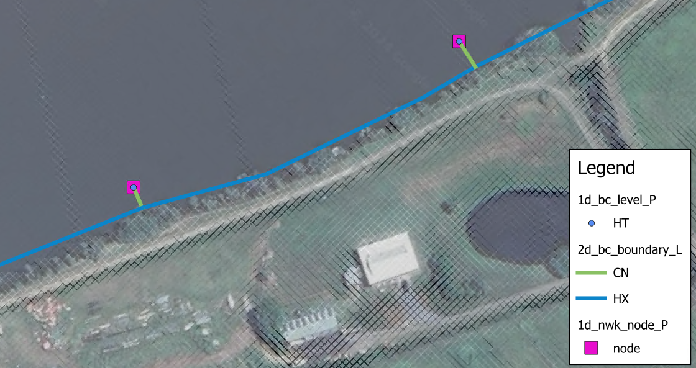
8.4.1.2 Groundwater Boundaries
At the edges of the active model area, three boundary conditions are currently supported for the groundwater layers:
- Sealed boundary, no inflow or outflow (default in absence of defined boundary);
- Groundwater level vs time (type “GT”) as detailed in Table 8.5; and
- Source flow from a 1D model (type “SX”) as detailed in Table 8.6. See Section 10.2.2.2.
To specify a groundwater level vs time boundary, a “GT” type boundary line can be digitised in the 2d_bc file format. The same groundwater level boundary applies to all vertical layers. If the specified groundwater level is below the elevation at the bottom of the layer, it is dry. If the specified groundwater level is above the elevation at the top of the layer, the layer is fully saturated.
8.4.2 Source Area Boundaries
A 2d_sa layer is used to define a Source – Area boundary (flow or rainfall vs time), applying the flow directly onto the cells within the digitised polygon. Negative values remove water directly from the cell(s). There are multiple options regarding these boundaries:
- Source - Area boundary (2d_sa) - see Section 8.4.2.1 for options to spatially distribute applied flows.
- Source - Area Rainfall boundary (2d_sa_rf) - see Section 8.4.2.2 for specifying an input rainfall hyetograph instead of flow hydrographs.
- Source - Area Trigger option (2d_sa_tr) - see Section 8.4.2.3 for initiating inflow hydrographs based on a flow or water level trigger.
- Source - Area Flow option (2d_sa_po) - see Section 8.4.2.4 for modelling seepage or infiltration based on a varying water level or flow rate elsewhere in the model.
8.4.2.1 Source Area Options (2d_sa)
There are a number of options for distributing flows to cells within a SA region, these are:
- Distributed firstly to the lowest cell and then distributing between wet cells (Read GIS SA). This is the default option.
- Distributed to 2D cells connected to 1D pits (Read GIS SA PITS).
- Distributed to all cells equally (Read GIS SA ALL).
- Distributed to streamlines when used in conjunction with (Read GIS SA STREAM ONLY). The default option is to distribute SA inflows to all streamline cells and any non-streamline wet cells. This can be further controlled with Read GIS SA STREAM ONLY or Read GIS SA STREAM IGNORE.
The cells that the SA polygons are applying flow to can be checked using the _sac_check layer.
See Section 8.4.2.5 for information on how overlapping polygons are treated.
Any one of these options for spatially distributing flow can be used in combination with any one of the other special options (“RF” - Section 8.4.2.2, “TRIGGER” - Section 8.4.2.3 and “PO” - Section 8.4.2.4).
When distributing the water between the cells there are two options that can be specified in the .tcf. These are:
- SA Minimum Depth, this sets a minimum depth below which flow will not be distributed to the cell (apart from the lowest cell). The default minimum depth is -99999 (i.e. 0 depth, representing a dry cell).
- SA Proportion to Depth, this command proportions the SA inflows according to the depth of water. The default is ON, which proportions the flow according to the depth of water in the cells with deeper cells getting more flow.
The PITS option directs the inflow to 2D cells that are connected to a 1D pit or node connected to the 2D domain using “SX” for the Conn_1D_2D (previously Topo_ID) 1d_nwk attribute. The inflow is spread equally over the applicable 2D cells. An ERROR occurs if no 2D cells are found within the region.
The ALL option is available to apply the flow/rainfall to all active cells (either wet or dry cells) within the region. Not including any inactive or cells that have a water level boundary or HX 1D/2D linkage applied. If using the ALL option the double precision (see Section 13.3.2) version may be needed when using TUFLOW Classic as this is a similar approach to direct rainfall modelling.
The distribution of SA inflows to streamlines is activated when used in conjunction with Read GIS Streams command. This is discussed further in Section 8.4.2.1.1.
Table 8.7 lists the attributes for 2d_sa layers which are referenced in the .tbc file using the command Read GIS SA to read in flow hydrographs
Models using the Read GIS SA functionality are provided in the Inflows Example Model Dataset on the TUFLOW Wiki.
| No. | Default GIS Attribute Name | Description | Type |
|---|---|---|---|
1 |
Name |
The name of the BC in the BC Database (see Section 8.5). |
Char(100) |
8.4.2.1.1 Streamlines
Streamlines allow the user to apply SA inflows along the waterways rather than to the lowest cell (when all cells are dry within the SA region). This approach can be useful to apply baseflows to a river channel for instance. If streamlines have been specified using the .tbc Read GIS Streams command, SA inflows are distributed along the 2D cells selected by the stream lines within each SA region.
Read GIS Streams can be used one or more times in the .tbc file to define streamline cells. Streamlines are line objects, usually representing the path of the waterways. One attribute is required, which is the Stream Order as an integer type, as shown in Table 8.8. Only objects with a Stream Order greater than zero (0) are used by TUFLOW. Streams that are not to be used for applying SA inflows can be assigned a stream order of 0 (or deleted from the layer). The 2D cells along a streamline are selected as a series of continuous cells in the same manner as any other boundary line.
GIS and other software have the ability to generate streamlines from DEMs, and usually assign a stream order to each stream line. If needed, rearrange (or copy) the attributes so that the first attribute is the specified stream order. Alternatively, use the ‘Insert TUFLOW Attributes to existing GIS layer’ tool within the QGIS TUFLOW Plugin.
By default, any wet cells that are not streamline cells are also included in the distribution of the SA inflow. The commands Read GIS SA STREAM ONLY and Read GIS SA STREAM IGNORE provide options for controlling streamline inflows.
The _sac_check layer will show those cells selected as streamline cells.
| No. | Default GIS Attribute Name | Description | Type |
|---|---|---|---|
1 |
Stream Order |
The stream order. Objects with a stream order greater than 0 are used. |
Integer |
8.4.2.2 Rainfall Option (2d_sa_rf)
Read GIS SA RF (rainfall) option calculates flow from an input rainfall hyetograph based on catchment area, initial loss and continuing loss information specified in the 2d_sa_rf GIS file. Boundary condition inputs are specified as a rainfall hyetograph (mm versus hours) instead of flow hydrographs, which is required for the other Read GIS SA options.
Initial and continuing loss values applied through the Materials Definition file (.tmf or .csv format) are ignored when using the Read GIS SA RF (rainfall) option.
See Section 8.4.2.5 for information on how overlapping polygons are treated.
Models using the Read GIS SA RF functionality are provided in the Inflows Example Model Dataset on the TUFLOW Wiki.
See Section 8.4.3 for alternative methods of applying rainfall boundaries.
| No. | Default GIS Attribute Name | Description | Type |
|---|---|---|---|
1 |
Name |
The name of the BC in the BC Database (see Section 8.5). |
Char(100) |
2 |
Catchment_Area |
Additional attribute for the RF Option (Read GIS SA RF Command). The contributing catchment area in m\(^2\) (if using SI units) or miles\(^2\) (if using Units == US Customary). Note: This attribute is required as the polygon area is not used as the sub-catchment area because the rainfall area may be different to the polygon extent.A value of zero will trigger ERROR 2460. |
Float |
3 |
Rain_Gauge_Factor |
A multiplier that allows for adjusting the rainfall due to spatial variations in the total rainfall. A value of zero will cause ERROR 2460 and the simulation will halt, see also Zero Rainfall Check command. |
Float |
4 |
IL |
The Initial Loss amount in mm on inches (if using Units == US Customary). |
Float |
5 |
CL |
The Continuing Loss rate in mm/hr or inches/hr (if using Units == US Customary). |
Float |
8.4.2.3 Trigger Option (2d_sa_tr)
Read GIS SA TRIGGER option allows the initiation of inflow hydrographs based on a flow or water level trigger. For example, reservoir failures can be initiated based on when the flood wave reaches the reservoir. An example of this option is:
Read GIS SA Trigger == gis\2d_sa_tr_dambreaks.shpThe 2d_sa_tr layer is a 2d_sa layer (with one attribute, Name), to which three additional attributes are added, as listed in Table 8.10. These are:
- Trigger_Type
- Trigger_Location
- Trigger_Value
Every timestep during the simulation, the flow (Q_) or water level (H_) of the 2d_po object referenced by Trigger_Location is monitored. When the 2d_po exceeds the Trigger_Value value the SA hydrograph commences.
If applying the hydrograph as a dam break, when digitising the SA trigger polygon, it should preferably be on the downstream side of the dam wall, extending the width of the dam wall and possibly be several cells thick (in the direction of flow). If there are stability issues, enlarging the SA polygon will help, however applications have indicated the feature typically performs well with the SA polygon a few cells thick.
The 2d_po line (flow) or point (water level) referred to by Trigger_Location can be located anywhere in the model. For cascade reservoir failure modelling it would usually be modelled using a 2d_po flow line, or for a 2d_po water level point just upstream of the dam.
2d_po flow lines MUST be digitised from LEFT to RIGHT looking downstream (if not, the flow across the 2d_po line will be negative and the trigger value will never be reached).
| No. | Default GIS Attribute Name | Description | Type |
|---|---|---|---|
1 |
Name |
The name of the BC in the BC Database (see Section 8.5). The 2023-03 release changes the behaviour of HPC and Classic models that use multiple SA polygons with the same boundary name. In the 2023-03 release or newer, these boundaries are treated separately; as if they were different boundary names with the same hydrograph. Previously, these SA boundaries would be treated as a single boundary and the cells selected by each polygon would be grouped together. If duplicate SA boundary names are encountered, TUFLOW will issue CHECK 2492 in the 2023-03 Release. |
Char(100) |
2 |
Trigger_Type |
Trigger_Type must be set to “Q_” or “Flow” for a trigger based on a flow rate, or “H_” or “Level” for a trigger based on a water level. |
Char(40) |
3 |
Trigger_Location |
Trigger_Location is the PO Label in a 2d_po layer (see Section 11.3.2.1).The 2d_po Type attribute must also be compatible with the Trigger_Type (i.e. it must include Q_ or H_ as appropriate). |
Char(40) |
4 |
Trigger_Value |
Trigger_Value is the flow or water level value that triggers the start of the SA hydrograph. |
Float |
8.4.2.4 Flow Feature (2d_sa_po)
The Read GIS SA PO option models seepage or infiltration based on a varying water level or flow rate elsewhere in the model. This functionality is available when using TUFLOW Classic only. For example, modelling the seepage of groundwater into a coastal lagoon that is dependent on the water level in the lagoon.
The feature is set up as follows:
- Create a 2d_po point object of Type “H_” at the water level location.
- Add “Read GIS PO == …” to the .tcf file if not already there.
- Create a new 2d_sa_po layer, as listed in Table 8.11. As of the 2023-03-AF release this layer is automatically created when using the Write Empty GIS Files command, previously this layer had to be created manually by adding the two following attributes to a 2d_sa layer:
- PO_Type: Char of length 16
- PO_Label: Char of max length 40
- Digitise the SA polygon(s) covering the area of seepage or infiltration and for the attributes:
- Set the Name attribute to the name of the water level vs flow curve in the BC database.
- Set PO_Type to “H_”.
- Set PO_Label to the PO Label of the relevant 2d_po “H_” point to be used to determine the flow from the h vs Q curve.
- Add “Read GIS SA PO == …” to the .tbc file.
Alternatively, to base the SA flow on the flow elsewhere in the model, use a 2d_po line object of Type “Q_”. To check the SA in/outflow:
- View the _MB.csv files. The SA in/outflow from the seepage or infiltration will be part/all of the SS columns.
- Add “SS” to the Map Output Data Types command. This outputs the net in/outflow from all source flows (ST, SA, SX and rainfalls) over time.
| No. | Default GIS Attribute Name | Description | Type |
|---|---|---|---|
1 |
Name |
The name of the BC in the BC Database (see Section 8.5). The 2023-03 release changes the behaviour of HPC and Classic models that use multiple SA polygons with the same boundary name. In the 2023-03 release or newer, these boundaries are treated separately; as if they were different boundary names with the same hydrograph. Previously, these SA boundaries would be treated as a single boundary and the cells selected by each polygon would be grouped together. If duplicate SA boundary names are encountered, TUFLOW will issue CHECK 2492 in the 2023-03 Release. |
Char(100) |
2 |
PO_Type |
PO_Type must be set to “Q_” to set the SA flow in/out of a model based on a flow rate, or “H_” to base it on a water level. |
Char(16) |
3 |
PO_Label |
PO_Label is the Label attribute in a 2d_po layer (see Section 11.3.2.1).The 2d_po Type attribute must also be compatible with the PO_Type (i.e. it must include Q_ or H_ as appropriate). |
Char(40) |
8.4.2.5 Overlapping 2d_sa/2d_rf regions
Overlapping behaviour of regions differs for 2d_sa (inclusive of the 2d_sa_rf option), 2d_rf Rainfall Polygons and Rainfall Control File 2d_rf polygons.
2d_sa regions and 2d_rf regions used with the Rainfall Polygon direct rainfall approach (Section 8.4.3.1.3) with unique ‘Name’ attributes may overlap and their respective source terms apply cumulatively on a cell by cell basis.
For 2d_sa regions, where polygons overlap and have the same boundary ‘Name’ attribute, the boundaries are treated separately; they are applied cumulatively as if they were different boundary names with the same hydrograph. If duplicate 2d_sa boundary names are encountered, TUFLOW will issue CHECK 2492. Prior to the 2023-03 release, these 2d_sa regions would be treated as a single boundary and the cells selected by each polygon would be grouped together.
For 2d_rf regions used with the Rainfall Polygon direct rainfall approach (Section 8.4.3.1.3), where polygons overlap and have the same ‘Name’ attribute, only the first is used. This includes if Names are used by a 2d_sa input.
For 2d_rf regions used with the Rainfall Control File approach (Section 8.4.3.1.4), where polygons overlap, only the last is used, irrespective of whether they have the same or unique boundary ‘Name’ attributes. WARNING 2623 is issued in this case.
With the TUFLOW Classic solution scheme there is no limit to the number of regions that stack up (i.e. overlap) at a given location. However, for the TUFLOW HPC scheme, the total number of 2d_sa and 2d_rf regions that apply at a given cell is limited to 4. The stack depth is checked at each cell and ERROR 2443 will result if the limit is exceeded.
8.4.3 Rainfall Boundaries
While the 2d_bc (Section 8.4.1) and 2d_sa (Section 8.4.2) approaches require users to predefine inflow hydrographs at model boundaries based on monitoring data or extracted from external hydrologic modelling tools, rainfall depth can be applied directly to 2D cells across the entire catchment to simulate catchment runoff. This direct rainfall approach enables the integration of catchment hydrology and hydraulic modelling within a single framework.
Four approaches are available for applying rainfall directly to the 2D cells. These are listed below and described in the following sections.
- Global Rainfall: the same rainfall is applied uniformly across the entire model domain.
- Rainfall Polygons (2d_rf): the model domain can be subdivided into a series of user-defined rainfall polygons, each assigned spatially uniform rainfall from a different gauge.
- Rainfall Control File (.trfc): rainfall gauges are defined as point locations, and a series of commands are applied to control the spatial interpolation of rainfall across the model domain. This approach generates a series of rainfall grids available to the user for display or checking.
- Gridded Rainfall: rainfall distribution over time applied as a temporally indexed series of grid files (.tif, .flt, .asc) or in a NetCDF file.
8.4.3.1 Rainfall Boundary Configuration
8.4.3.1.1 Rainfall Data
For all rainfall boundaries (except Gridded Rainfall), the input data must be prepared in a hyetograph format, and referenced in the BC Database (bc_dbase - Section 8.5). The rainfall data must be in simulation time (hours) versus depth (mm) (or time versus inches if using Units == US Customary). Time increments do not have to be a constant interval. The input data is converted to rainfall rate (mm/h or in/h) and, by default, is applied using a STEPPED approach, which holds the rainfall rate constant for the time interval.
The first and last rainfall entries should be set to zero, otherwise these rainfall values are applied as a constant rainfall if the simulation starts before or extends beyond the first and last time values in the rainfall time-series.
In Figure 8.2 below, the rainfall depth of 4.0mm is applied between the simulation times of 0h and 0.25h and the rainfall depth of 6.1mm is applied between the simulation times of 0.25h and 0.5h. These convert to a constant rainfall rate of 16mm/h and 24.4mm/h, respectively.
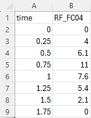
Note that SMOOTH approach can be applied to some rainfall BC (boundary condition) types. Please refer to the Rainfall Boundaries command in Appendix A.
8.4.3.1.2 Global Rainfall
The .tbc command Global Rainfall BC may be used to apply a spatially uniform rainfall depth to all active cells within the 2d_code layer based on the input hyetograph.
Global Rainfall BC == <rainfall_bc_name>
<rainfall_bc_name> is the name of the boundary condition (BC) in the BC Database (see Section 8.5).
Global Rainfall Initial Loss and/or Global Rainfall Continuing Loss can be used to quickly set up the rainfall losses for the Global Rainfall option. These commands must be set prior to the Global Rainfall BC command.
However, note that if losses are also specified in the Materials file (see Section 7.2.7.3 and Section 7.2.7.4), the material based losses are preferentially applied over the global loss options. See Section 8.4.3.1.6 for information on rainfall losses.
Global Rainfall Area Factor can be used to factor the global rainfall after the application of global losses, and otherwise before the application of materials file losses.
An example of global direct rainfall model is provided in TUFLOW Module 6 - Part 1.
8.4.3.1.3 Rainfall Polygons
The 2d_rf GIS layer applies a rainfall depth to every active cell within the digitised polygon using the Read GIS RF command, based on an input hyetograph.
Read GIS RF == <path_to_2d_rf>
Table 8.12 lists the attributes in 2d_rf layers.
The 2d_rf layer effectively utilises the digitised polygon extent as the “contributing catchment area”. This differs to 2d_sa_rf approach (Section 8.4.2.2) which requires a catchment area to be manually specified.
An example direct rainfall model using rainfall polygons is provided in TUFLOW Module 6 - Part 2.
| No. | Default GIS Attribute Name | Description | Type |
|---|---|---|---|
1 |
Name |
The name of the rainfall BC in the BC Database (see Section 8.5). It is recommended that each polygon has a unique Name and that they do not overlap. See Section 8.4.2.5 for information on the treatment of overlapping polygons. |
Char(100) |
2 |
f1 |
A multiplier that allows for adjusting the rainfall due to spatial variations in the total rainfall. To vary the rainfall spatially, apply different f1 and/or f2 attribute values to each polygon. Values of f1 greater than 1 are permitted but, a value of zero will cause ERROR 2460 and the simulation will halt. See also Zero Rainfall Check command. |
Float |
3 |
f2 |
A second multiplier that allows for adjusting the rainfall spatially. Values of f2 greater than 1 are permitted but, a value of zero will cause ERROR 2460 and the simulation will halt. See also Zero Rainfall Check command. |
Float |
8.4.3.1.4 Rainfall Control File (.trfc)
Where the 2d_rf Rainfall Polygon applies spatially uniform rainfall inside the polygons, a Rainfall Control File (.trfc) contains a series of commands that can be used to both temporally and spatially interpolate the rainfall from rainfall gauges, generating pre-processed rainfall grids. Appendix F contains the full list of required and optional .trfc commands.
The .trfc file can be read in the .tcf file using the following command:
Rainfall Control File == <path_to_.trfc>
Only one .trfc file can be specified in the .tcf file.
As with the Global Rainfall and the 2d_rf Rainfall Polygons, the rainfall distribution varies over time according to the input hyetographs at the gauges (Section 8.4.3.1.1).
Three methods are available to spatially interpolate rainfall depths from the gauges to the 2D domain. The following .trfc command is used to set the interpolation method. This command is compulsory as there is no default interpolation method.
RF Interpolation Method == IDW | POLYGON | TIN
IDW (Inverse Distance Weighting)
Rainfall depth is calculated based on the distance to the surrounding rainfall gauges, specified in 2d_rf format (see Table 8.12) by the following command:
Read GIS RF Point == <path_to_2d_rf_point_file>
The calculation is done via the inverse distance weighting approach:
\[ z_{r} = \frac{\sum_{i = 1}^{n} (\frac{z_{i}}{d_{i}^{p}})}{\sum_{i = 1}^{n} (\frac{1}{d_{i}^{p}})} \tag{8.2}\]
Where:
- \(z_{r}\) = interpolated rainfall depth at a specific location
- \(z_{i}\) = rainfall depth at rainfall gauge \(i\)
- \(d_{i}\) = distance to rainfall gauge \(i\)
- \(p\) = exponent used in IDW interpolation (default value is 2)
- \(n\) = maximum number of rainfall gauges used in IDW interpolation
The exponent (\(p\)) can be changed from its default value of 2 using IDW Exponent. The IDW Maximum Points and IDW Maximum Distance can be used to exclude points from the interpolation, this can reduce memory requirements when a large number of rainfall points are used. If using, it is strongly recommended to adjust IDW Maximum Distance and IDW Maximum Points based on the spatial density of the rainfall gauges in the model domain to ensure sensible rainfall distribution is generated from the IDW interpolation.
If null value exists in the rainfall input data, the following .tcf command can be used to exclude the null data for the IDW rainfall interpolation:
Rainfall Null Value == {-99} | <null_value>
TIN (Triangulation Irregular Network)
TIN interpolation is applied to calculate rainfall depth. The rainfall gauges are specified in 2d_rf format (see Table 8.12) by the following command:
Read GIS RF Point == <path_to_2d_rf_point_file>
While a TIN used for spatial interpolation is specified via the following command:
Read GIS RF Triangles == <path_to_tin>
The TIN polygons must connect the rainfall point (Read GIS RF Point) using triangles. No attribute is required for the TIN file, as TUFLOW only checks for the polygon shape to conduct TIN interpolation.
POLYGON
Similar to the 2d_rf Rainfall Polygons method, a series of polygons in 2d_rf format (see Table 8.12) can be specified to apply spatially uniform rainfall within each polygon:
Read GIS RF Polygons == <path_to_2d_rf_polygon_file>
This can be used to apply distributions such as Thiessen polygons generated from other software. The Rainfall Control File (.trfc) approach is more memory efficient compared to the 2d_rf Rainfall Polygons approach. See discussion below for more information.
Read GIS RF Point can optionally be specified in combination with Read GIS RF Polygons for the POLYGON interpolation method. In such cases, the rainfall gauges are specified by the Read GIS RF Point command with 2d_rf format (see Table 8.12), while the Rainfall Polygons (which must have blank Name attributes) are only used to define the area that each point rainfall gauge is applied to. Although this approach requires two input files, this can be useful when using the same point rainfall gauge file to compare the 3 spatial interpolation approaches in one control file. Expand the dropdown below for an example of this.
The rainfall control file is processed during model initialisation. A series of rainfall grids are output into a new “RFG” folder in the same location as the .trfc file. These are then used by the simulation to vary the rainfall over the 2D domain(s). This rainfall grid pre-processing approach reduces memory usage whilst TUFLOW is running. The generated rainfall grids can be interrogated prior to the end of the simulation for checking purposes and are also useful for displaying purposes. The rainfall grid format must be specified in the .trfc file using the following mandatory command:
RF Grid Format == ASC | FLT | NC | TIF
For more details on the different formats, please see the RF Grid Format command in Appendix F.
By default, the grid size of the generated rainfall grids is 10 times the 2D domain cell size. The RF Grid Cell Size command can be optionally specified to adjust the spatial resolution and/or to reduce the file size.
Note, the generated rainfall grids are inclusive of adjustments made in the BC Database (e.g. multiplication factors used for climate change) and of spatially-dependent adjustment factors in the input GIS layer’s attributes. They are not inclusive of the Rainfall Boundary Factor and any rainfall losses that may be specified in a materials file, which are applied during the simulation. The generated grids, either the NetCDF or the non-NetCDF formats with a csv file, can be utilised as Gridded Rainfall inputs for subsequent simulations to save the pre-processing time.
An example of a total rainfall depth grid, output when using the .trfc IDW interpolation approach and four rainfall gauges, is shown in Figure 8.3.
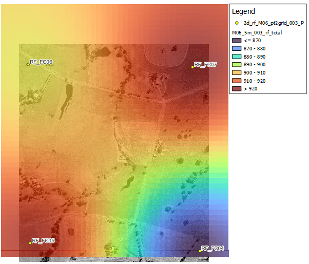
Example .trfc files are available in the TUFLOW Wiki Rainfall Control File Examples and in TUFLOW Tutorial Module 6 - Part 3.
8.4.3.1.5 Gridded Rainfall
If the rainfall data is already prepared in grid format, it may be applied to the model using the .tcf command Read Grid RF. The command references a .csv index containing links to rainfall grids or a NetCDF file containing the time-varying data.
Read Grid RF == <path_to_rainfall_database_file>
or,
Read Grid RF == <path_to_rainfall_netcdf_file>
This allows the applied rainfall to vary spatially across the model without digitising multiple rainfall polygons within a 2d_rf GIS layer (Rainfall Polygons approach). If using the .csv file index, the rainfall grids may be in any TUFLOW supported grid format (.tif, .flt, .asc), noting that .tif and .flt are much faster for TUFLOW to process than .asc.
To use the NetCDF format, please refer to TUFLOW NetCDF Rainfall Format Wiki Page.
For the .csv index format, the rainfall database contains two columns, the first being time (in simulation hours) and the second being the rainfall grid (total rainfall depth for the time increment in mm). Time increments do not have to be a constant interval. The indexed grids are converted to rainfall rate (mm/h or in/h), and applied using a STEPPED approach, which holds the rainfall rate constant for the time interval.
An example of a rainfall database is shown in Figure 8.4. In this example, the values in the 2\(^{nd}\) rainfall grid are the total rainfall depth from time 0 to time 0.17 hours (i.e. not the rainfall intensity in mm/h or inch/h). In the first and last rainfall grid, the rainfall depth is recommended to be set to zero. Otherwise, the rainfall rates calculated based on the first/last rainfall grids are extended before and after the first/last rainfall grid times in the .csv file, if the simulation starts before or extends beyond the first and last time grid time.
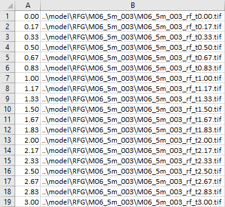
An example direct rainfall model using rainfall grids is provided in TUFLOW Tutorial Module 6 - Optional.
8.4.3.1.6 Rainfall Losses and Infiltration
TUFLOW supports a range of rainfall loss and soil infiltration options. The following loss and infiltration methods are listed in order of processing application:
- The rainfall loss approach is a simplistic calculation method comparable to the rainfall excess loss methods included in traditional hydrology models, typically representing evapotranspiration or interception losses. In TUFLOW, rainfall losses remove the loss depth from the rainfall depth, before it is applied as a boundary to the 2D cells. Rainfall losses can be defined via:
- Global losses: Global Rainfall Initial Loss and Global Rainfall Continuing Loss (Section 8.4.3.1.2) can be applied for Global Rainfall only, in the absence of materials-based losses below.
- Materials-based losses: Initial and continuing losses can be defined in the materials file and applied spatially based on the material types (see Section 7.2.7.3).
- SCS Curve Number loss approach (USDA, 1986): Estimates rainfall excess losses as a function of cumulative precipitation, soil cover, land use, etc. In TUFLOW, the SCS infiltration parameters are set based on soil type (see Section 7.3.5.1.1).
- Soil Infiltration:
- Various soil infiltration approaches (e.g. Green-Ampt, Horton and ILCL, see Section 7.2.8) infiltrate ponded water into the soil after rainfall is applied to the 2D cells. This is considered a more realistic representation of the actual physics and is recommended when using direct rainfall modelling.
Rainfall losses are not applied to negative rainfall values (e.g. to model evaporation), see Section 8.4.3.8.
8.4.3.1.7 Rainfall Adjustments
During sensitivity testing or for factoring rainfall intensity for scenarios such as climate change, rainfall can be easily adjusted via a number of different methods, instead of rewriting the input hyetograph:
bc_dbase adjustments can be made for the Global Rainfall, 2d_rf Rainfall Polygons and Rainfall Control File (.trfc) approaches (see Table 8.13).
Rainfall Boundary Factor can be used to apply a global multiplication factor for all rainfall boundary types. This factor compounds with any initial bc_dbase adjustments.
2d_rf layer adjustments can be made with the F1 and F2 attributes for 2d_rf Rainfall Polygons and Rainfall Control File (.trfc) boundaries (see Table 8.12).
Note: These rainfall adjustments are applied before rainfall losses (Section 8.4.3.1.6).
Global Rainfall Area Factor can be set for Global Rainfall boundaries only, factoring rainfall after the subtraction of any Global Rainfall Initial Loss or Global Rainfall Continuing Loss.
8.4.3.2 Checks and Results
8.4.3.2.1 Check Files
The 2d_bc_tables check file provides rainfall data inclusive of any bc_dbase adjustments only for Global Rainfall and 2d_rf Rainfall Polygon boundaries (Section 8.4.3.1.3).
The TUFLOW Log File (.tlf, see Section 14.4.1) provides the following processed rainfall data. Key phrases to search in the .tlf to locate the data are provided in italics.
- For Global Rainfall, processed rainfall data, inclusive of:
- any bc_dbase adjustments and Rainfall Boundary Factor (search .tlf: Rainfall histogram after rain gauge factor adjustment);
- then global losses (search .tlf: Rainfall histogram conversion after IL and CL);
- then Global Rainfall Area Factor, and converted to mm/h (or in/h) (search .tlf: Global Rainfall histogram).
- For 2d_rf Rainfall Polygons boundaries, processed rainfall data, inclusive of:
- any bc_dbase adjustments and Rainfall Boundary Factor (search .tlf: Rainfall histogram after Rainfall Boundary Factor adjustment);
- then converted to mm/h (or in/h) (search .tlf: RF Rainfall histogram conversion).
- For Rainfall Control Files (.trfc), the processed rainfall data are reported in the .tlf inclusive of bc_dbase adjustments and spatially-dependent adjustment factors in the input GIS layer’s attributes (search .tlf: Rainfall histogram after rain gauge factor adjustment).
For Rainfall Control Files (.trfc), rainfall depth grids are also generated during preprocessing. These grids are inclusive of bc_dbase adjustments (e.g. multiplication factors used for climate change) and of spatially-dependent adjustment factors in the input GIS layer’s attributes, but exclusive of Rainfall Boundary Factor and any materials file rainfall losses. These can be interrogated prior to the end of simulation.
To use US customary units, the .tcf command Units == US Customary must be specified.
8.4.3.2.2 Map Outputs
It is recommended to activate several Map Output Data Types specific to direct rainfall modelling (see Table 11.4) for model diagnostic and display purpose, including:
- RFR and RFC: view the rainfall rate (mm/h or in/h) and cumulative rainfall (mm or in) over time respectively. These are inclusive of rainfall adjustments and losses and can be used as additional checks.
- RFML: spatially view the cumulative materials file based rainfall losses (mm or in).
- CI and IR: Cumulative Infiltration (mm or in) and infiltration rate (mm/h or in/h) applied based on the soil infiltration calculation.
As a direct rainfall model applies water to all 2D cells, it is also recommended to apply Map Cutoff Depth and Map Cutoff Vector to facilitate fit-for-purpose mapping that limits the display of user defined shallow depths.
To use US customary units, the .tcf command Units == US Customary must be specified.
8.4.3.3 Wetting and Drying
As direct rainfall model applies rainfall across all the 2D cells within the whole catchment, a substantial number of cells could experience shallow sheet flow. It is recommended to consider reducing Cell Wet/Dry Depth from the default 0.002m (or 0.007ft) to less than a mm (e.g. 0.0002m or 0.0007ft) to invoke momentum calculation at the cell side at shallow depth.
Cell Wet/Dry Depth == 0.0002
This is recommended for both Classic and HPC solution schemes, unless using SGS. For HPC models with SGS enabled, lowering the Cell Wet/Dry Depth is not necessary, as the wetting/drying occurs in the SGS storage curve (Section 8.4.3.6).
Since the 2026.0.0 TUFLOW release, HPC Infiltration Drying Approach == Method C is the default infiltration approach in the HPC solver to improve the model stability. TUFLOW dries cells (switches off momentum calculation) once the cell water depth falls below the cell wet/dry depth. However, Method C allows soil infiltration to occur in dry cells with positive rainfall rate, until the depth reaches a smaller depth. The first threshold to switch off momentum calculation (or the ‘wetting depth’ in the image below) is still set by the Cell Wet/Dry Depth command. The second threshold to switch off infiltration (or the ‘drying depth’) is set by the HPC Infiltration Drying Depth command.
This command is optional. If omitted, the default drying depth is Cell Wet/Dry Depth - 0.0001m (or 0.0001ft if using Units == US Customary).
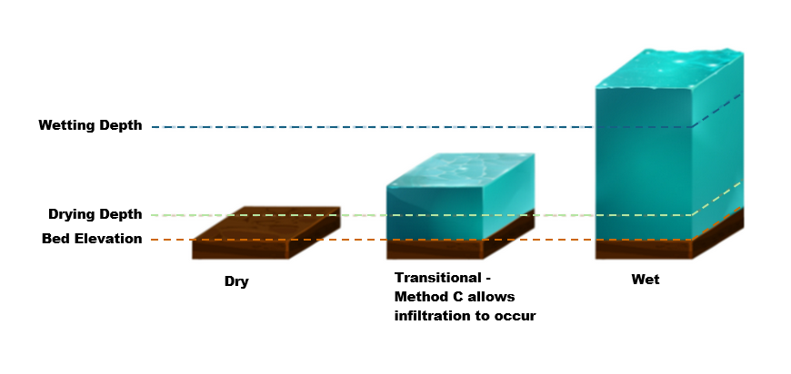
8.4.3.4 Bed Roughness for Direct Rainfall Model
In a direct rainfall model, sheet flow occurring over steep terrain can lead to a breakdown of key assumptions applied in the conventional shallow water equation (SWE):
- Conventional SWE solvers assume a small bed slope and do not account for slope angle in the pressure term for steeper terrain.
- The Manning’s coefficient is usually derived for deep flow in channels where the roughness elements are very small compared to the flow depth. Manning’s n value and/or equation may not be a reliable estimate of bed resistance at the shallow sheet flow depths typical to direct rainfall modelling, where higher roughness values relative to the shallow depth are expected.
It is highly recommended to adjust the Manning’s n values to calibrate the hydraulic response of catchments. Application of depth varying roughness (see Section 7.2.7.3) or “Law of the Wall” approach (Section 7.2.7.2) could also be considered to account for high roughness at shallow depth and/or to counter the overestimation of the pressure gradient in a direct rainfall model.
Depth varying roughness can also be used to represent the rapid run-off response associated with rainfall on building roofs, with higher bed roughness applied for deeper flows when the building structure impedes overland flow, as discussed in Section 7.2.11.1.
8.4.3.5 Model Precision and Memory Requirements
TUFLOW Classic uses an implicit finite difference solver for which the primary state variable is the water elevation. The use of water elevation as the primary variable can have limitations when run in single precision. When computing differences in water elevations between adjoining cells, numerical precision errors arise when the model has high altitude DEM data, or very thin sheet flow (i.e. rainfall models). When using TUFLOW Classic for models with high altitude and/or rainfall, it is advisable to run the model with the double precision executable, see Section 13.3.2. The .tcf command Model Precision == Double can be used to ensure that only a double precision version of TUFLOW is used.
TUFLOW HPC (including Quadtree) uses an explicit finite volume scheme based on water depth, and the single precision executable generally works well for models with high altitude and/or rainfall. If in doubt, or even just curious, it is recommended to re-run the same model in double precision and compare the results.
Note that switching to double precision also increases the memory footprint. This is usually not a constraint for direct rainfall models running on CPU. However, for HPC models running on GPU hardware, the increased memory footprint may become a constraint due to the limited onboard memory typically available on GPUs. For this reason, the ‘POLYGON’ interpolation approach (Section 8.4.3.1.4) defined using a Rainfall Control File (.trfc) is preferred over the direct rainfall boundary condition inputs defined using the 2d_rf Rainfall Polygon approach with the Read GIS RF command, as the former requires a far smaller amount of memory.
Also note that for non-high-performance GPU models (such as the GeForce series), simulation speed may reduce considerably when using double precision.
8.4.3.6 Sub-Grid Sampling (SGS) with Direct Rainfall
It is highly recommended to use HPC and sub-grid sampling (SGS), when modelling using direct rainfall. SGS represents cell storage and faces with a curve rather than flat elevations (see Section 7.3.3) and cells can be partially wet. SGS has been found to significantly improve direct rainfall modelling by low flow transmission of water with minimal retention or blocking of flows (Ryan et al., 2022) plus significantly reduced sensitivity to cell size (Kitts et al., 2020). See Section 3.2.3.1.
There are a number of associated SGS hydraulic calculation and output settings that should be reviewed for direct rainfall modelling given the differences in SGS vs standard flat cell schematisation and their interaction, particularly with shallow sheet flow. Please refer to the commands SGS Sheet Flow Approach, SGS Infiltration Approach and SGS Negative Rainfall Approach in Section 7.3.3.1.3 for information related to hydraulic calculation approaches and Section 7.3.3.2 for information on output options.
8.4.3.7 Groundwater
Flood modelling of single rainfall event often requires considering soil infiltration and soil capacity. However, for long term continuous simulations with multiple rainfall events, it is recommended to enable the advection of groundwater flow to take into account the change in groundwater storage during dry periods. For more details, please refer to the Section 7.3.5.2.
Also relevant to direct rainfall modelling with groundwater flow:
- Section 8.4.3.1.6 for information on soil based losses and infiltration, and
- Section 8.4.3.3 for information on the HPC infiltration drying approach.
8.4.3.8 Negative Rainfall
Negative rainfall values can be applied in TUFLOW to model evaporation/evapotranspiration. It is typically implemented as a negative Global Rainfall boundary overlapped with another type of inflow rainfall boundary (e.g. Global Rainfall + .trfc Rainfall Control File). Initial and continuing losses (Section 8.4.3.1.6) are not applied to negative rainfall values.
For groundwater enabled models, negative rainfall is allowed to be drawn from the topmost groundwater layer under surface layer cells that are dry, thus mimicking evapotranspiration (see Section 7.3.5.2.7). Prior to the 2023-03 release, this would only decrement the water in wet cells until they dry and would not draw from the cumulative infiltration layer.
8.5 Boundary Condition (BC) Database
A boundary condition (BC) database is created using spreadsheet software such as Microsoft Excel. Two types of files are required:
- A database or list of BC events, including information on where to find the BC data.
- One or more files containing the boundary data (e.g. flow, level, rainfall data).
The database file must be .csv (comma delimited) formatted, or HEC-DSS (see Section 8.5.4). It must contain a row with the pre-defined keywords ‘Name’ and ‘Source’, as listed in Table 8.13. Other keywords control how data is extracted from the Source.
The BC data files can be in a variety of formats, as described for the ‘Source’ keyword in Table 8.13. Additional formats can be incorporated upon request. It is recommended that all .csv files originate from one spreadsheet with a worksheet dedicated to each .csv file. The Excel TUFLOW Tools.xlm macros can be used to export the worksheets to .csv format, see Section 17.2.5.
The active BC database is specified using the BC Database (.tcf file), BC Database (.ecf file) and/or BC Database (.tbc file) commands. Note, specifying BC Database in the .tcf file automatically applies to both 1D and 2D domains (i.e. there is no need to specify the command in the .ecf or .tbc files). The active database can be changed at any point by repeating the command in any of these files.
The maximum line length (i.e. number of characters including spaces and tabs) in a single line of a source file is 100,000 characters. If the keyword is not found in the “Name, Source” line, the default column is used to define the column of data for that keyword.
| Keyword | Description | Default Column |
|---|---|---|
Name |
The name of a BC data location. The name must be the same name as used in the GIS 1d_bc, 2d_bc, 2d_sa, 2d_sa_rf or 2d_rf layers. It may contain spaces and other characters, though must not contain any commas. It is not case sensitive. The name of a group of boundaries can be used for RAFTS (.loc and .tot files) and WBNM (via the .ts1 file format) hydrographs. For example, if
Using this approach, the size of the BC Database .csv file can be reduced from several hundred lines for large hydrologic models to a couple of lines. |
N/A |
Source |
The file from which to extract the BC data. By default, the first value of a linked boundary condition data file is extended backward in time indefinitely and the last value is extended forward in time indefinitely. For flow boundaries, it is recommended that first and last values are set to zero. The benefit is that if a simulation starts before or finishes after the start/end of a hydrograph, the flow from this hydrograph into the model will be zero. Otherwise the first and last values are extended as a constant boundary. This can be done manually, or with the BC Zero Flow command. Acceptable formats are:
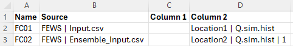
Note, the type of file is determined by the extension, and ensure the file has the correct extension. |
N/A |
Column 1 or Time |
For .csv files, the name of the first column of data (usually time values in simulation hours) in the .csv Source File. Other examples besides Time are Flow for a HQ (stage-discharge) boundary, or Mean Water Level for each wave component in a 2D HS (sinusoidal wave) boundary. For all other types of Source entry (including FEWS .csv), leave this field blank. |
3 |
Column 2 or Value or ID |
For .csv files, the name of the second column of data in the .csv Source File. For example, water levels in a HT boundary, flows for a QT boundary or water levels for a HQ boundary. For a Blank Source entry, the constant value to be applied. For example, to apply a mean water level to a HT boundary the source can be left blank and the water level entered in this column. For RAFTS-XP (.tot or .loc), WBNM _Meta.out and TUFLOW/ESTRY .ts1 files, the name of the hydrograph location to extract. For FEWS .csv and .xml boundaries the Location ID and Parameter ID need to be defined, separated by a vertical bar. The FEWS .csv file also supports event ensembles. For this an optional 3\(^{rd}\) argument can be specified defining the ensemble ID. In the 1\(^{st}\) boundary database entries below a FEWS .csv file is specified with the location ID For external wind stress boundaries (.tesf), used to define the wind speed (m/s) Note: it is NOT possible to combine the Value and ID keywords in the column label, for example “Value or ID”. If they are combined, the default column number of 4 is used. |
4 |
Add Col 1 or TimeAdd |
An amount to add to all Column 1 (normally time) values (e.g. a time shift) for the BC data event. If left blank or zero, there is no change to the time values. This field is ignored for Blank Source entries. |
5 |
Mult Col 2 or ValueMult |
A multiplication factor to apply to the Column 2 values. If left blank or one (1), there is no change to the values. Note, Mult Col 2 is applied before Add Col 2 below. This field is ignored for Blank Source entries. |
6 |
Add Col 2 or ValueAdd |
An amount to add to Column 2 values. If left blank or zero, there is no change to the values. Note, Add Col 2 is applied after Mult Col 2. For example, this could be used to add a base flow to a QT boundary or sea level rise allowance for a HT boundary. This field is ignored for Blank Source entries. |
7 |
Column 3 |
For .csv files, the name of the third column of data when a third column of data is required. For example, the phase difference for each wave component in a 2D HS (sinusoidal wave) boundary. For external wind stress boundaries (.tesf), used to define the wind direction (degrees relative to East, ie. East = 0º, North = 90º, etc.). For all other types of Source entries, leave this field blank. |
8 |
Column 4 |
For .csv files, the name of the fourth column of data when a fourth column of data is required. For example, the period for each wave component in a 2D HS (sinusoidal wave) boundary. For all other types of Source entries, leave this field blank. |
9 |
8.5.1 BC Database Example
Figure 8.6 shows a simple example of a BC database setup in a worksheet that is exported as a .csv file for use by TUFLOW.
TUFLOW searches through the file until a row is found with the two keywords Name and Source. Name and Source do not have to be located in Columns 1 and 2 (although this is recommended).
Table 8.13 describes the purpose of each keyword and the default column where applicable. At present a range of formats are accepted, and other formats can be incorporated upon request.
The example above is interpreted as follows:
- A boundary condition data location named “Level” is found in a boundary condition GIS file (eg. 2d_bc, 2d_sa, 2d_rf etc.). The boundary condition time-series data associated with it are found in the file heads.csv. Within the csv file, the time values are located under a column called “Time” and the BC values are located under a column “Lake Level”.
- As an alternative to “Level” above, a boundary condition data location “Level (alternative)” is set a constant value of 2.
- A boundary condition data location named “River Inflow” is found in a boundary condition GIS file. The time-series data associated with it is available in flows.csv. Within flows.csv, time details are found in the column titled “Time 1”. Boundary condition values are found in the column titled “River Flow”. Similarly, “Creek Inflow” and “Base Flow” are also located in flows.csv.
- A boundary condition data location named “RAFTS Inflow” extracts the hydrograph from a RAFTS-XP .tot file named “rafts.tot” for RAFTS node “IN”.
The heads.csv and flows.csv files are created by saving the worksheets “heads.csv” and “flows.csv” as .csv files (see Figure 8.7 and Figure 8.8).
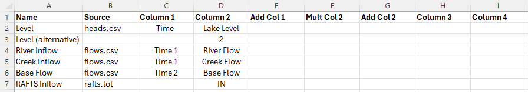
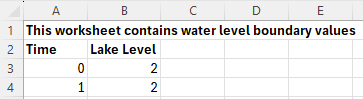
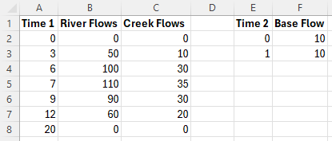
8.5.2 TUFLOW Boundary Generators
The development of boundary conditions is usually model specific, although there are some common regional approaches to flow and rainfall generation. To assist with this, a number of boundary generator tools have been created within QGIS which allow the modeller to semi-automate the production of the BC Database, boundary data files for different events, patterns and storm duration and also an associated TUFLOW Event File. Currently, these exists for 3 regional hydrological approaches. For a description of each, the reader is referred to the relevant Wiki page:
- Australian Rainfall and Runoff 2019 Tool (ARR to TUFLOW tool): The ARR to TUFLOW tool interacts with the Australian Bureau of Meteorology website, in conjunction with ARR input parameters, to generate rainfall hyetographs together with optional soil loss files depending on the method (tsoilf or material.csv).
- UK Revitalised Flood Estimation Handbook 2 (ReFH2 to TUFLOW tool): This allows both flow hydrographs and rainfall hyetographs to be developed for a TUFLOW simulation for a range of events and storm durations based on imported FEH Catchment or point descriptors.
- Auckland Region SCS to TUFLOW tool. This tool allows flow hydrographs to be developed for the Auckland, New Zealand region using the U.S. Soil Conservation Service (SCS) (now known as the Natural Resources Conservation Service, part of the U.S. Department of Agriculture) rainfall-runoff model. The implemented approach complies with Auckland City Council’s TP108 policy.
Please let support@tuflow.com know if you have suggestions for a boundary conditions generators
8.5.3 Delft FEWS Boundaries
Boundary timeseries in the Delft FEWS boundary format are supported, as shown in Table 8.13.
Delft FEWS .csv and .xml files are TUFLOW compatible. In both cases the keyword “FEWS” is required in the ‘Source’ field of the BC Database followed by a vertical bar “|” and then the Delft FEWS filename (for example FEWS | <sourcefile.csv>). Following ‘Source’ in the BC Database:
- ‘Column 1’ is not required. This is due to TUFLOW sourcing time information directly from the Delft FEWS file.
- ‘Column 2’ is needed to define the Location ID, Parameter ID, and when using the .csv format, the Ensemble ID. Each parameter is separated by a vertical bar. For example:
Ensemble ID information is only possible using the Delft FEWS .csv format. It is not possible using Delft FEWS xml format.
The header section for an input .xml is shown below. Any data in the timeseries with the value equal to that defined by the <missVal> in the header are ignored. Additional header tags are ignored by TUFLOW.
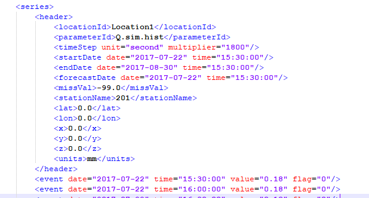
The FEWS Input File command can be used to set the duration of the TUFLOW simulation and the NetCDF Output Start Date based on information within the FEWS boundary file. FEWS Input File can refer to either a FEWS .csv or FEWS .xml file. Using this command, the duration and End Time value of the TUFLOW simulation is determined from the Delft FEWS input file. If using this approach, no End Time command should be included in the .tcf file. The start date defined in the FEWS input file is used to set the NetCDF output start date (e.g. NetCDF Output Start Date).
8.5.4 HEC-DSS Boundaries
The 2023-03 release introduced support for time-series data from HEC-DSS files within a boundary condition database. HEC-DSS is a database system for time series, curve, gridded data and more, developed by the U.S. Army Corps of Engineers Hydrologic Engineering Center (HEC). See their website at https://www.hec.usace.army.mil/software/hec-dss/ for more information. It is used by the HEC developed models for data input and output. TUFLOW can read time-series or paired data. Paired data is for generic curves that do not have a time component such as rating curves. Gridded data is not currently supported.
HEC-DSS files organise data into paths with six parts (Part A – Part F) that resemble how files are organised on disk. Figure 8.11 shows an example DSS file with a single path, with the curve plotted below.
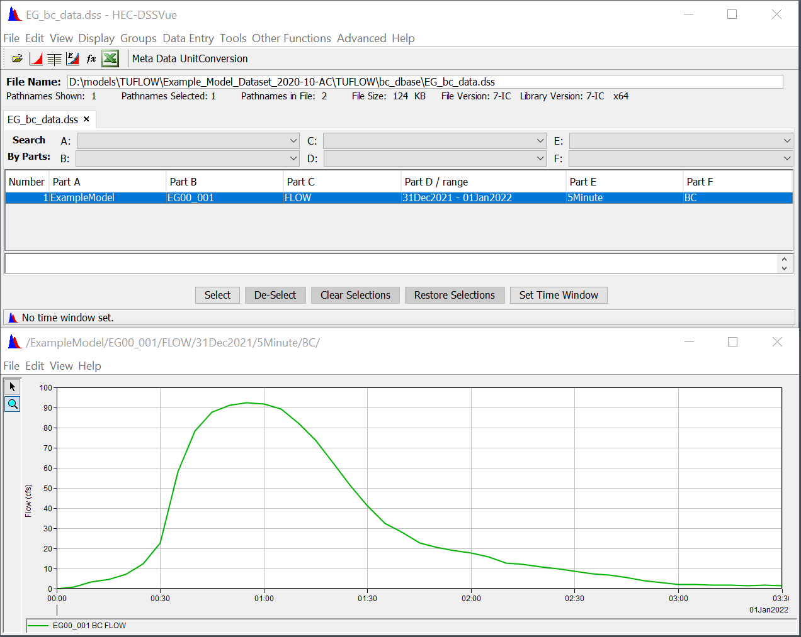
To use a HEC-DSS time-series or paired data curve within a TUFLOW boundary condition database:
- Provide the filename in the “Source” column.
- Leave “Column 1”, which is used for time, blank (DSS files store the time with the curve values).
- Identify the pathname in “Column 2.” Event placeholders such as event can be used as part of the pathname. Wildcards (*) can be used for parts of the path, however, ensure the wildcards will not select more than one path within the file.
- The “Add” and “Mult” columns can be used to offset or scale the x or y values, the same as non-DSS curves.
Figure 8.12 shows how the time-series curve above could be included in a boundary condition database. A wildcard is used for Part D of the pathname (date range). Note that the pathname must start with a forward slash (/).
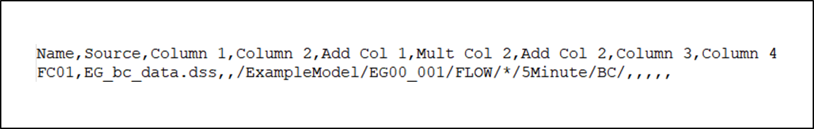
HEC-DSS time-series curves are always assigned complete dates and times. However, TUFLOW simulation time is just hours from an arbitrary time zero. In order to get HEC-DSS full date times into TUFLOW relative times, by default, TUFLOW uses the first point in the time-series curve as TUFLOW time-zero. This can be changed using the command HEC-DSS Start Date to identify the date/time that should be used for time-zero. The date should be in the isodate format: yyyy-mm-dd hh:mm:ss, where the time portions are optional. For example:
HEC-DSS Start Date == 2022-01-018.6 Cyclones / Hurricanes / Typhoons
Wind and pressure fields created by severe storms can affected flooding and inundation in coastal areas. It is possible to apply a cyclone / hurricane / typhoon boundary within TUFLOW to capture these affects. Cyclone / hurricane / typhoon wind and pressure fields with the Holland parametric model (Holland, 1980) can be read in with either of the .tcf commands below (which are treated identically):
Read GIS Cyclone == <gis_line_layer> | <gis_point_layer>
Read GIS Hurricane == <gis_line_layer> | <gis_point_layer>
This command can be used to read a cyclone, hurricane or typhoon track. The attributes of the GIS layers are listed in Table 8.14 and are all float values. See Queensland Government (2001) for further information on the GIS attributes. The line layer defines the track of the cyclone. The point layer specifies the time the cyclone arrives at each point coordinate along the track, as well as associated parameters such as pressure and wind speed (see Table 8.14). It is not necessary to have points snapped to every vertex of the line – values will be interpolated between the digitised points. There must be points with attribute data snapped to the start and end of the polyline track.
The optional NO PRESSURE and NO WIND options deactivate the pressure/wind fields respectively. E.g. Read GIS Cyclone NO WIND == <gis_line_layer> | <gis_point_layer> will only apply the pressure field and ignore the wind.
The wind and pressure fields of a cyclone boundary are updated every timestep in a Classic model. For HPC model, the wind and pressure fields are updated on CPU and sent to GPU for hydraulic calculation. Due to the slow data transfer speed between CPU and GPU, HPC model does not update the wind and pressure fields every timestep. It is recommended to use the HPC Cyclone Boundary Update Interval command to specify the update interval of a cyclone boundary.
| No. | Default GIS Attribute Name | Description | Type |
|---|---|---|---|
1 |
Time |
Time in hours. |
Float |
2 |
p0 |
Pressure at the eye (hPa). |
Float |
3 |
pn |
Pressure of surrounds (hPa). |
Float |
4 |
R |
Radius to maximum winds (m) (or ft if using Units == US Customary). |
Float |
5 |
B |
Peakedness. See Queensland Government (2001). |
Float |
6 |
rho_air |
Density of air (kg/m\(^3\)) (or lb/ft\(^3\) if using Units == US Customary).If zero, Density of Air is used. |
Float |
7 |
km |
A boundary layer (B/L) coefficient that transfers gradient level wind speeds to the mean near-surface wind. If zero, equation C.20 in the Queensland Government (2001) is used. |
Float |
8 |
ThetaMax |
Line of maximum wind (degrees). See Queensland Government (2001). |
Float |
9 |
DeltaFM |
Asymmetry factor. See Queensland Government (2001). |
Float |
10 |
bw_speed |
Background wind speed in m/s (or ft/s if using Units == US Customary). Ignored if less than or equal to zero. |
Float |
11 |
bw_dirn |
Background wind direction in degrees relative to East (0°), North (90°), etc.. |
Float |
The generation of the wind and pressure fields are based on Appendix C of “Queensland Climate Change and Community Vulnerability to Tropical Cyclones – Ocean Hazards Assessment – Stage 1” (Queensland Government, 2001).
The wind and pressure fields can be output using the WI10 and AP options for Map Output Data Types. The background wind is applied outside R (the radius of maximum winds), if it exceeds the cyclone/hurricane wind speed.
The Latitude must be specified via .tcf command “Latitude == <latitude_value>”.
8.7 External Stress Boundaries
The external stress control file (.tesf) allows the definition of time varying global or spatially varying external forcing such as wind or wave radiation stresses. This allows the user to specify one of the following types of wind / stress boundary:
- Global wind (i.e. temporally but not spatially varying wind field is applied).
- Grid Interpolation. Point winds are applied at locations within / near the model, these point winds are interpolated to gridded stresses across the model.
- User specified time varying gridded datasets.
The wind time-series curve is entered as three columns of data (using Column 1, 2 and 3 labels in the bc_dbase). The three columns are:
- Time (h)
- Wind (m/s or ft/s if using Units == US Customary)
- Direction (degrees relative to East, i.e. East = 0º, North = 90º, etc.).
Prior to the simulation the wind boundaries are converted into a shear stress boundary and this shear stress is applied to the model. The shear stress is calculated based on Equation 8.3.
\[ \tau = C_{10}\ \rho_{air}\ U_{10} \tag{8.3}\]
Where:
- \(\tau\) = shear stress in N/m\(^2\) (or lbf/ft\(^2\)).
- \(\rho_{air}\) = density of air in kg/m\(^3\) (or lb/ft\(^3\)).
- \(U_{10}\) = wind velocity at 10m above the mean water surface in m/s (or ft/s).
- \(C_{10}\) = wind stress coefficient and is calculated using Equation 8.4 based on Wu (1980) and Wu (1982).
\[ C_{10} = \left( 0.8 + 0.065\ U_{10} \right)\ \times 10^{- 3} \tag{8.4}\]
Metric (SI) units are TUFLOW’s default. To use imperial units, ensure Units == US Customary has been specified in the .tcf.
For the interpolated stress grids, these are output to disk at model start-up and then loaded in during the model simulation as required. The grids can be used as a “check” file as they are written prior to the simulation starting. For each time in the specified boundary series two stress grids are produced, shear stress in the x direction (\(\tau_x\)) and shear stress in the Y direction (\(\tau_y\)). When interpolating grids from point data the wind boundary at each point is converted to \(\tau_x\) and \(\tau_y\) and these x and y component stresses are interpolated using the selected method (as described below).
Alternatively, a series of \(\tau_x\) and \(\tau_y\) grids can be directly read into the simulation. The input grids must be in a format TUFLOW supports for reading (see Section 4.3.1). For all formats except NetCDF, an index .csv file is input containing the time data in Column 1, and the filenames for the x and y component stresses in Columns 2 and 3 respectively. For the NetCDF format, time, \(\tau_x\) and \(\tau_y\) must all be variables in the same NetCDF file. The format of the user specified external grids is the same as produced by TUFLOW when interpolating from points to grids.
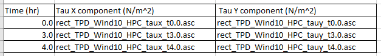
As the user specified gridded stresses are applied as a stress term (rather than a wind boundary) these could potentially be used for external stress forcing other than winds, for example wave radiation stresses.
All stress related commands (see Appendix G) are specified in the External Stress File (.tesf), which is referred to in the .tcf using the command, External Stress File. If this command is included TUFLOW automatically invokes the external stress functionality. Other .tcf commands relevant to the wind stress functionality are Density of Air, Density of Water, Wind/Wave Shallow Depths. A model using an External Stress File (.tesf) is provided in the Boundary Condition Options Example Model Dataset on the TUFLOW Wiki.
In the .tesf one of the following commands is required to apply global, interpolated from point or gridded stresses.
- Global Wind BC: Used to invokes a global wind boundary.
- Read GIS Wind Point and Read GIS Wind Poly invokes grid interpolation.
- Read Gridded Tau invokes the use of a user specified grid.
If applying a global wind boundary, no additional .tesf file commands are required.
For the grid interpolation the following commands are applicable:
- Grid Interpolation Method
- Output Grid Format
- Output Grid Cell Size
- Output Grid Origin
- IDWExponent
- IDW Maximum Distance
- IDW Maximum Point
The GIS attribute format associated with the inputs called by the Read GIS Wind Point and Read GIS Wind Poly commands is provided in Table 8.15.
| No. | Default GIS Attribute Name | Description | Type |
|---|---|---|---|
1 |
Name |
The name of the BC in the BC Database (see Section 8.5). |
Char(100) |
8.8 Initial Conditions
Two options are available for setting initial conditions in the model. Initial Water Levels (IWLs) can be defined in the 1D and 2D domains to set a global constant or spatially-varying water level. Alternatively, the use of restart files sets initial water levels, flow velocities and flow regime based on a previous simulation of the model.
8.8.1 Initial Water Levels (IWL)
8.8.1.1 1D Domains
For 1D domains, initial water levels (IWL) can be set globally as a constant using the .ecf command Set IWL. IWLs can also be set to vary spatially using one or more GIS layers. The default initial water level at 1D nodes is zero metres above datum (0 mAD).
To set up a GIS IWL layer for the 1D domains:
- Create a 1d_iwl layer using an empty layer created by Write Empty GIS Files.
- Digitise points snapped to nodes and assign each point an initial water level value, alternatively points can be copied from the _nwk_N_check files and assigned an IWL.
- Save the GIS layer.
- Use the Read GIS IWL command to read in the IWL values.
Any number of IWL layers may be used, noting that if a node’s IWL occurs more than once, the last occurrence prevails (i.e. TUFLOW or ESTRY overwrites any previous IWL already set).
Differences in initial water levels for related features in the 1D and 2D domain can cause model instabilities at the start of a model simulation. If your model becomes unstable in the first few timesteps, review the initial water level values to ensure they are consistent in both domains and also match the water level of any head boundaries that they are be connected to.
| No. | Default GIS Attribute Name | Description | Type |
|---|---|---|---|
1 |
IWL |
Initial water level of object relative to model datum (m). |
Float |
8.8.1.2 2D Domains
2D IWLs can be set globally as a constant using the Set IWL (.tcf file) or Set IWL (.tgc file) commands. The default initial water level is zero metres above the model datum (or 0ft if Units == US Customary). IWLs can also vary spatially using one or more GIS and/or grid layers. The (Read GIS IWL can be read into both the .tcf or the .tgc, shown in Example Model EG06_001. The Read Grid IWL) can be read into the .tgc file, shown in Example Model EG06_002. This is particularly useful for setting initial water levels in lakes, dams, etc.
The easiest way to set up a GIS IWL layer is to:
- Create a 2d_iwl layer using an empty layer created by Write Empty GIS Files.
- Digitise regions or points and assign each object an initial water level value.
- Save the GIS layer.
- Use the .tcf Read GIS IWL command or tgc Read GIS IWL command to read in the IWL values.
The Read Grid IWL .tgc command is used to read the IWL from a grid (.tif, .flt or .asc). This can be used to set the IWL based on the water level in a previous simulation, if TIF, FLT or ASC is specified in the Map Output Format. The results from one simulation can be directly read by another.
Any number of IWL layers may be used, noting that if a cell’s IWL occurs more than once, the last occurrence prevails (i.e. TUFLOW overwrites any previous IWL already set).
Models using 2D initial water level (2d_iwl) are provided in the Boundary Condition Options Example Model Dataset on the TUFLOW Wiki.
| No. | Default GIS Attribute Name | Description | Type |
|---|---|---|---|
1 |
IWL |
Initial water level of object relative to model datum (m). |
Float |
8.8.1.3 Automatic Initial Water Level
It is possible to automatically set the model’s initial water level to the downstream boundary water level using Set IWL == AUTO. This command is very useful when performing a Monte Carlo assessment that requires a large number of simulations with each simulation having a unique initial water level!
8.8.2 Initial Groundwater Levels
This section discusses available commands to set initial conditions in groundwater layers. As of the 2023-03 release, when using TUFLOW HPC, it is possible to have numerous groundwater layers in the vertical (see Section 7.3.5.2). If using this functionality the initial water levels can also be set per layer by using ‘Layer N’. If using only one layer, the syntax may be either ‘Set IGW Depth’ or Set IGW Depth Layer 1’.
The initial water level in the groundwater layer(s) can be set globally in the .tgc using the following commands:
They can also be set on a spatial basis using:
- Read GIS IGW Depth [ {} | <Layer N> ]
- Read Grid IGW Depth [ {} | <Layer N> ]
- Read GIS IGW Level [ {} | <Layer N> ]
- Read Grid IGW Level [ {} | <Layer N> ]
“IGW Depth” is assumed to be the depth of water in the soil (water content divided by porosity). “IGW Level” is assumed to be the level of the water table in each layer. If both methods are specified for a given grid cell, the highest initial condition will be adopted. The input units should be in meters or feet (if using Units == US Customary). Note, the initial conditions do not automatically cascade into layers below (i.e. setting the initial water level in the top layer will not automatically set the layers below to be 100% saturated).
Setting the initial conditions in the .tgc for any given grid cell will override the “Initial Moisture” parameter set in the .tsoilf. The difference between the methods is that the .tsoilf sets the initial moisture by soil type, whereas setting the initial conditions in the .tgc allows spatial distribution. If no initial conditions are set in the .tgc for a given grid cell, the initial conditions will be determined by the “Initial Moisture” defined in the .tsoilf.
The groundwater feature may only be used in conjunction with at least one of the soil infiltration methods described in Section 7.2.8. Consequently, the .tgc commands used to define the groundwater depth / level must be read in following (below) at least one of the commands used to define the soil type: Set Soil, Read GIS Soil or Read Grid Soil.
| No. | Default GIS Attribute Name | Description | Type |
|---|---|---|---|
1 |
Groundwater |
If using Read GIS IGW Level [ {} | <Layer N> ], this is set to the groundwater level (in meters above datum), for groundwater layer ‘N’, at the start of the model simulation. If using Read GIS IGW Depth [ {} | <Layer N> ], this is set to the groundwater depth above the bottom of the groundwater layer ‘N’ (in meters), at the start of the model simulation. The units are feet if usingUnits == US Customary. |
Float |
Legacy Features:
Prior to the 2023-03 release, the groundwater initial conditions could be set using the following commands. For backward compatibility, it is still possible to use these commands, though only if using one groundwater (soil) layer in the vertical:
If the above commands are used with the multiple vertical layers (Convective layers), ERROR 2588 will be produced.
For the above legacy features, the 2d_gw GIS layer (Table 8.18) attribute ‘Groundwater’ is: the groundwater level in meters above datum (if using Read GIS GWL), or depth below ground surface level in meters (if using Read GIS GWD) of the groundwater table at the start of the model simulation.
8.8.3 Restart Files
Gradually varying water surface initial water level conditions are best defined using a restart file. This is achieved by running the model for a warm-up period prior to the main event to create a restart file which establishes the initial water levels and flow velocities. This is achieved using the following commands:
- Write Restart File at Time: Sets when to write the restart file in hours.
- Write Restart File Interval: Sets the interval in hours between writing the restart file.
- Read Restart File: Reads a restart file written from a previous simulation.
- Write Restart Filename: Controls whether restart files are overwritten or are time-stamped.
The 1D and 2D restart files use a .erf and .trf extension respectively and are written to the results folder.
The restart file contains information on the water levels, velocities and flow regimes for the 1D and 2D parts of the model. If the Advection Dispersion (AD) Module (Chapter 9) is used, the restart file will also include AD information. The number of 2D cells and 1D channels must be the same between the original model and the model using the restart file. Permitted changes between runs could include different boundary conditions, cell elevation increases (cell elevation decreases may cause issue) and roughness values.
Models using write and read restart files are provided in the Output Options and Boundary Condition Options Example Model Datasets on the TUFLOW Wiki.
The 2023-03-AD build added functionality to allow restart data fields to be ignored. To specify which fields to ignore the command “Restart File Ignore Fields ==” can be set in the .tcf where the fields are any combination of:
- Geometry (elevations and Manning’s n values)
- Groundwater (groundwater depths and groundwater tracer concentrations)
- Maximum (scalar and vector maximums; both values and times, minimum timestep)
- Rainfall (cumulative rainfall, cumulative rainfall material losses and cumulative cell wet time)
- TimeOutputCutoff (Time Output Cutoff; time of first inundation and cumulative time inundated)
- Tracer (surface and groundwater tracer concentrations)
- Velocity (velocity and turbulence values)
- WaterLevel (water level)
For example: “Restart File Ignore Fields == Geometry Groundwater” will ignore the geometry and groundwater information in the restart file (for these, the values set in the control files are used).
By default (without the command above) the geometry information in the restart file is ignored and the .tgc information is used instead. See also HPC Restart Geometry == Restart File | {TGC} command. If the “Restart File Ignore Fields ==” command is included, but does not include geometry then message “WARNING 2902 -‘Restart File Ignore Field’ does not include geometry, overwriting geometry in .tgc with restart file” is issued.
Only one of “Restart File Ignore Fields” or “HPC Restart Geometry” should be used, an error is given if both commands are present in a control file.